第13章 正常妊娠
原书页 387–468 · 82 个页面区块 · 96 张配图。正文、图注与图片保持原书顺序。
| AF | amniotic fluid | 羊水 |
| AG | adrenal gland | 肾上腺（SAG suprarenal gland） |
| AmC | amniotic cavity | 羊膜 |
| BL | bladder | 膀胱 |
| Bo | bowel | 肠管 |
| BPD | biparietal diameter | 双顶径 |
| CB | cerebellum | 小脑 |
| CP | cerebral peduncles | 大脑脚 |
| CRL | crown-rump length | 头臀径长度 |
| Cx | cervix | 宫颈 |
| DV | ductus venosus | 静脉导管（catheter） |
| F | fetus | 胎儿 |
| FB | fetal body | 胎体 |
| FB | frontal bone | 额骨 |
| FH | fetal head | 胎头 |
| GA | gestational age | 孕龄 |
| GS | gestational sac | 胎囊 |
| HC | head circumference | 头围 |
| HT | heart | 心脏 |
| IVC | inferior vena cava | 下腔静脉 |
| L | liver | 肝脏 |
| LLV | left lateral ventricle | 左侧侧脑室 |
| L-F | left foot | 左足 |
| L-L | left lung | 左肺 |
| LA | left atrium | 左心房 |
| LEG | 腿 | |
| LRA | left renal artery | 左肾动脉 |
| LV | left ventricle | 左心室 |
| MCA | middle cerebral artery | 大脑中动脉 |
| MVP | maximum vertical pocket | 最大羊水深度 |
| M | mouth | 嘴 |
| N | nose | 鼻子 |
| NB | nose bone | 鼻骨 |
| NF | nuchal folder | 颈项软组织层 |
| NT | nuchal translucency | 颈项透明层 |
| OC | occipital bone | 枕骨 |
| OR | orbital | 眼眶 |
| P | pupil | 瞳孔 |
| PF | posterior fossa | 颅后窝 |
| PL | placenta | 胎盘 |
| R | radial | 桡骨 |
| PSV | peak systolic velocity | 收缩期峰值血流速度 |
| R-F | right foot | 右足 |
| R-L | right lung | 右肺 |
| RLCV | Right lateral ventricle | 右侧侧脑室 |
| RA | right atrium | 右心房 |
| RRA | right renal artery | 右肾动脉 |
| RV | right ventricular | 右心室 |
| SP | septum pellucidum | 透明隔 |
| Sp | spine | 脊椎 |
| ST | stomach | 胃 |
| THA | thalmus | 丘脑 |
| U | ulna | 尺骨 |
| UA | umbilical artery | 脐动脉 |
| UC | umbilical cord | 脐带 |
| UV | umbilical vein | 脐静脉 |
| YS | yolk sac | 卵黄囊 |
一、 早孕
（一） 妊娠5周多，子宫纵切面，显示妊娠囊（图13-1）
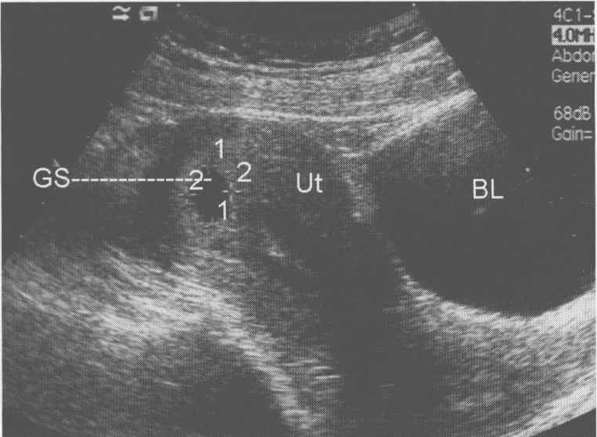
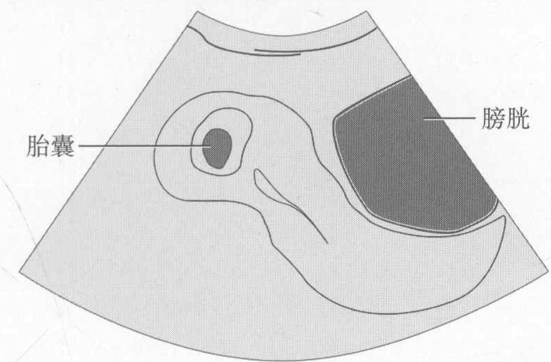
图13-1 妊娠5周多，子宫纵切面，显示妊娠囊
【扫查方法】 患者平卧位，充盈膀胱，将探头纵向置于腹中线耻骨联合上方。【断面结构】子宫纵切面，胎囊纵切面。
【测量方法及正常值】在此切面测量子宫的长径、前后径、妊娠囊的长径及前后径。正常值见表13-1。
表 13-1 孕囊平均直径和孕龄的关系
| 预测的平均孕囊（mm） | 孕龄（周） | 预测的平均孕囊（mm） | 孕龄（周） | 预测的平均孕囊（mm） | 孕龄（周） |
| 10 | 5.0 | 27 | 7.5 | 44 | 9.9 |
| 11 | 5.2 | 28 | 7.6 | 45 | 10.0 |
| 12 | 5.3 | 29 | 7.8 | 46 | 10.2 |
| 13 | 5.5 | 30 | 7.9 | 47 | 10.3 |
| 14 | 5.6 | 31 | 8.0 | 48 | 10.5 |
| 15 | 5.8 | 32 | 8.2 | 49 | 10.6 |
| 16 | 5.9 | 33 | 8.3 | 50 | 10.7 |
| 17 | 6.0 | 34 | 8.5 | 51 | 10.9 |
| 18 | 6.2 | 35 | 8.6 | 52 | 11.0 |
| 19 | 6.3 | 36 | 8.8 | 53 | 11.2 |
| 20 | 6.5 | 37 | 8.9 | 54 | 11.3 |
| 21 | 6.6 | 38 | 9.0 | 55 | 11.5 |
| 22 | 6.8 | 39 | 9.2 | 56 | 11.6 |
| 23 | 6.9 | 40 | 9.3 | 57 | 11.7 |
| 24 | 7.0 | 41 | 9.5 | 58 | 11.9 |
| 25 | 7.2 | 42 | 9.6 | 59 | 12.0 |
| 26 | 7.3 | 43 | 9.7 | 60 | 12.2 |
（引自：Hellman LM，Kobayashi M，Fillisti L，et al. Growth and development of the human fetus prior to the twentieth week of gestation. Am J Obstet Gynecol, 1969: 103 (6): 789-800.）
【临床价值】早期妊娠囊的重要特征为双膜结构，即内层为羊膜，外层为绒毛膜，均为稍强回声环，两环之间为低回声带。观察妊娠囊的大小、形态及张力情况。
（二） 妊娠5周多，子宫横切面，显示妊娠囊（图13-2）
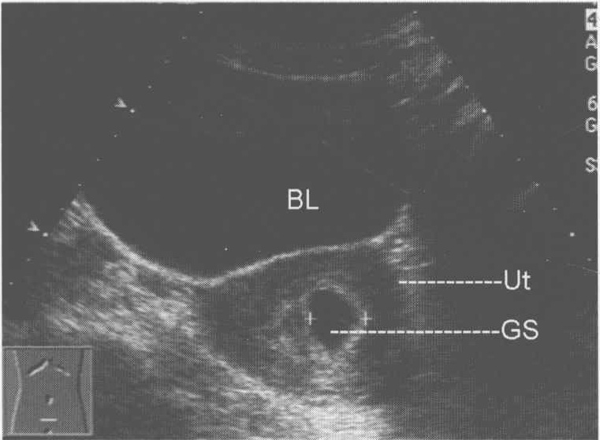
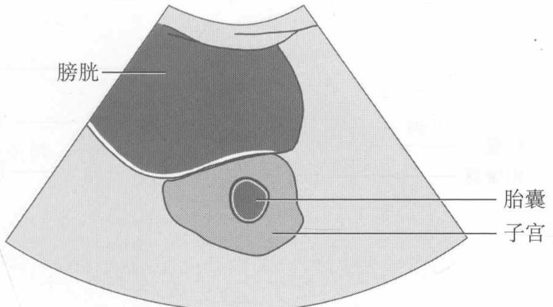
图13-2 妊娠5周多，子宫横切面，显示妊娠囊
【扫查方法】 患者平卧位，充盈膀胱，暴露下腹部，将探头横（水平）置于腹中线耻骨联合上方。
【断面结构】子宫横切面，胎囊横切面。
【测量方法及正常值】在此切面测量子宫的长径、前后径、妊娠囊的长径及前后径。正常值见表13-1。
【临床价值】在此切面可以观察到妊娠囊的大小、形态及张力情况，左右侧卵巢有无黄体及黄体的大小，有无异常回声。
（三） 妊娠5～6周，子宫及妊娠囊纵断面（图13-3）
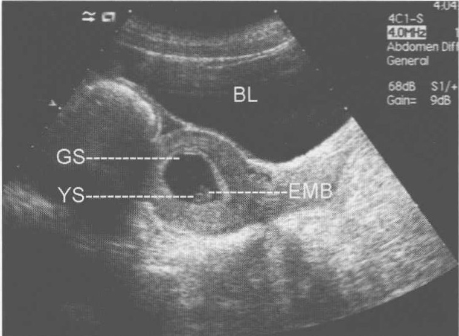
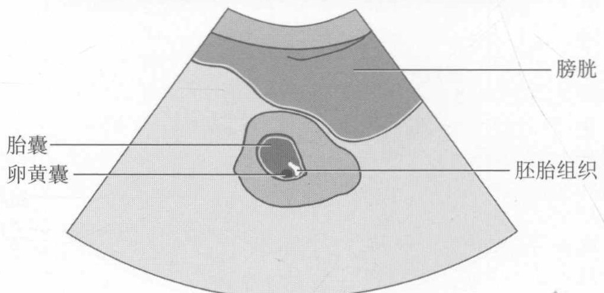
图13-3 妊娠5～6周，子宫及妊娠囊纵断面
【扫查方法】 患者平卧位，膀胱适度充盈，暴露下腹部，将探头纵向置于腹中线耻骨联合上方。
【断面结构】子宫纵切面，妊娠囊纵切面，卵黄囊（YS）及胎芽（EMB）。
【测量方法】 在此切面测量子宫的长径、前后径，妊娠囊的长径及前后径，卵黄囊的内径，胎芽是否出现。6周时妊娠囊的直径为15～20cm。
【临床价值】5周时可以观察到妊娠囊内的卵黄囊的圆形回声，卵黄囊是宫内妊娠的标志，可排除宫内假妊娠囊，在9周时开始缩小，并入脐带。观察胎芽的长度，原始心管的搏动次数、节律。
（四） 妊娠6～7周（图13-4）
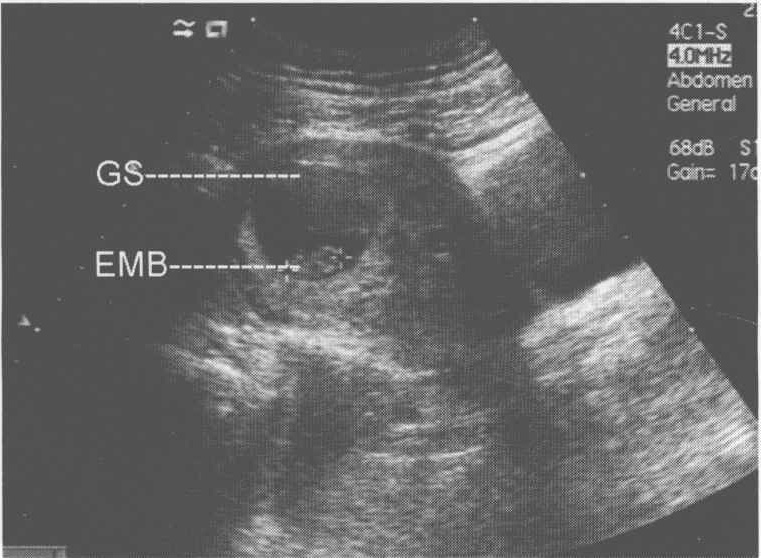
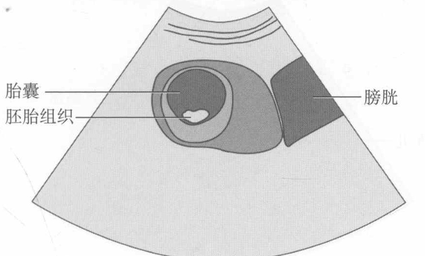
图13-4 妊娠6～7周胎囊
【扫查方法】 患者平卧位，膀胱适度充盈，暴露下腹部，将探头纵向置于腹中线耻骨联合上方。
【断面结构】子宫纵切面，可显示胚胎组织及胎心搏动。
【测量方法】 在此切面测量胎囊及胚胎组织的大小。脉冲多普勒可以探测到胎心搏动。
【临床价值】 根据以上探测指标判定胚胎是否存活，发育是否正常，胎囊和胎芽两者的比例是否正常，和孕周是否一致。6周以后羊膜腔逐渐占据胚外体腔，故妊娠囊内主要为羊膜腔。
（五） 孕8～9周，妊娠囊及胎儿（图13-5）
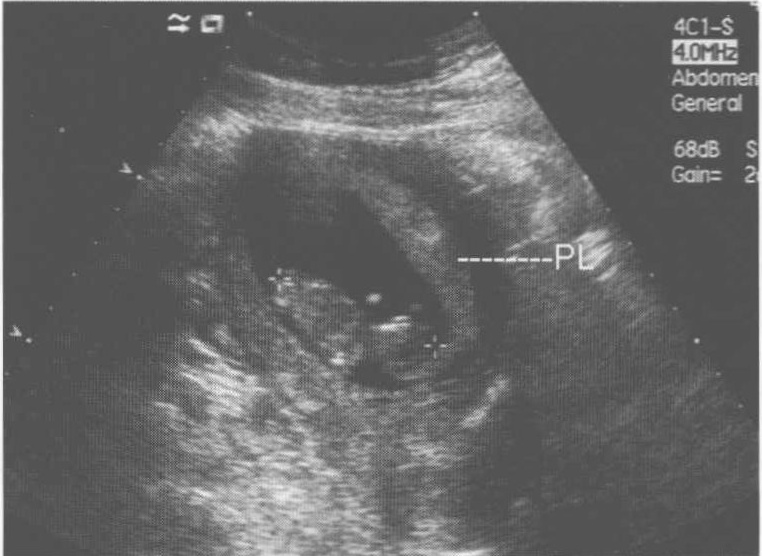
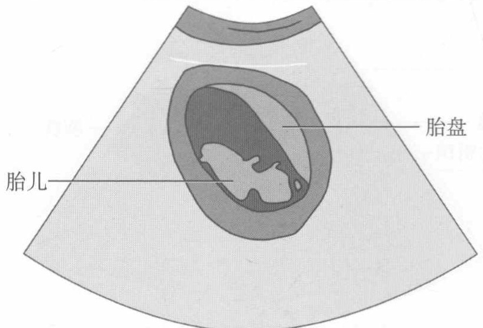
图13-5 孕8～9周，妊娠囊及胎儿
【扫查方法】 患者平卧位，膀胱适度充盈，暴露下腹部，将探头纵向置于腹中线耻骨联合上方。
【断面结构】子宫纵切面，胎儿冠状切面。可显示头颅、胸腹及上肢。
【测量方法】在此切面可测量胎儿顶臀径，卵黄囊。
【临床价值】8周末，胎儿初现雏形，此时胎头可显示颅骨环，依此可排除有无脑畸形。观察胎儿心率、心律；8周后胎盘开始形成，呈均匀的半月形较强回声。
（六）孕9周，胎儿颅脑横切面（图13-6）
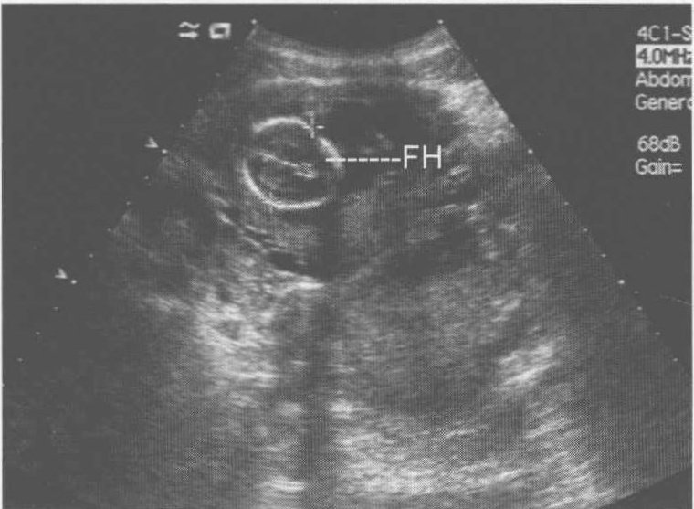
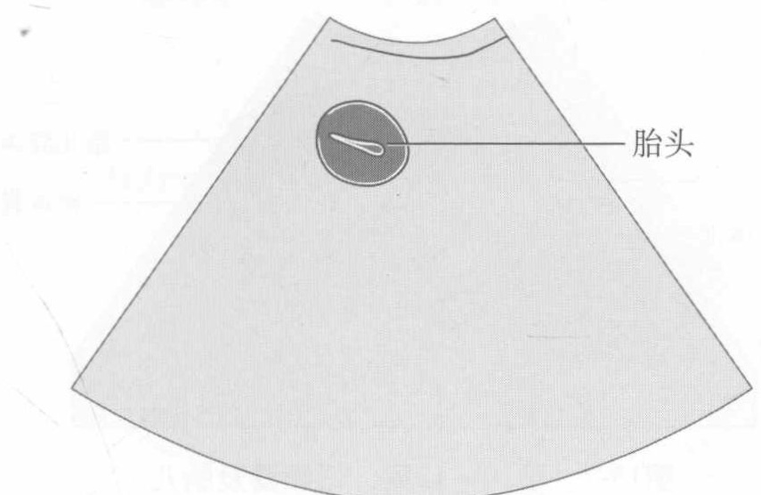
图13-6 孕9周，胎儿颅脑横切面
【扫查方法】 患者平卧位，膀胱适度充盈，暴露下腹部，将探头纵向置于腹中线耻骨联合上方。在显示胎儿长轴切面后，探头旋转 90°，横切颅脑。
【断面结构】可显示颅骨环及脑中线。
【测量方法】 此时，在此切面可测量胎儿双顶径（BPD）。
【临床价值】可显示颅骨环是否存在，是否完整，依此可排除有无脑畸形或颅骨部分缺损。
（七） 孕10～12周，妊娠囊及胎儿（图13-7）
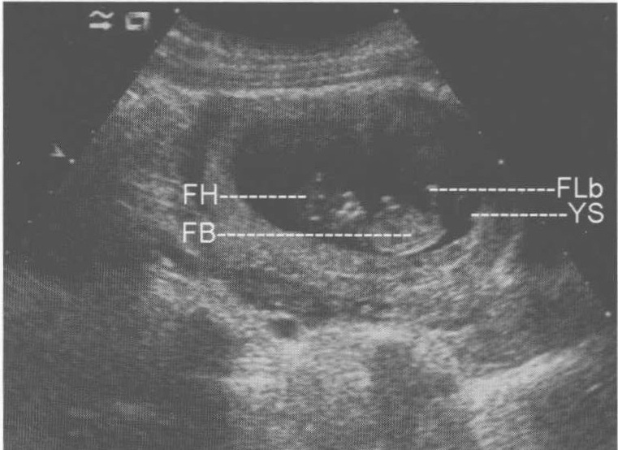
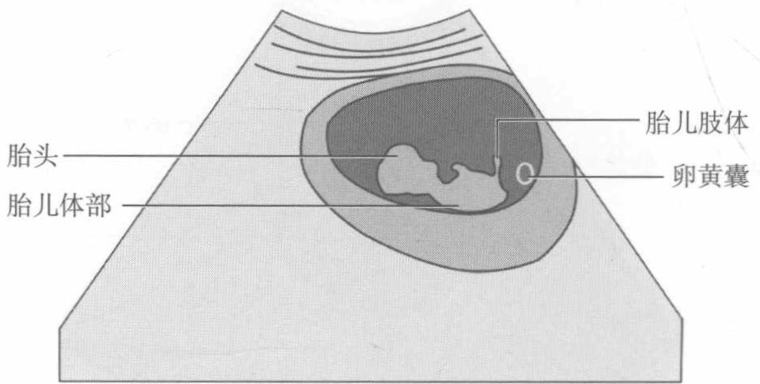
图13-7 孕10～12周，妊娠囊及胎儿
【扫查方法】 患者平卧位，膀胱适度充盈，暴露下腹部，将探头纵向置于腹中线耻骨联合上方。
【断面结构】10周以后，子宫纵切面，可显示已经成形的胚儿，头颅、四肢及脊柱均可见。
【测量方法】 在此切面测量胎囊及顶臀径（CRL），CRL 在新生儿也称坐高。脉冲多普勒可以探测到胎心搏动。
【临床价值】根据以上探测指标判定胚胎是否存活，发育是否正常，头臀径可以推测胎龄，判断和孕周是否一致。
（八）孕10～12周，胎儿冠状切面（图13-8）
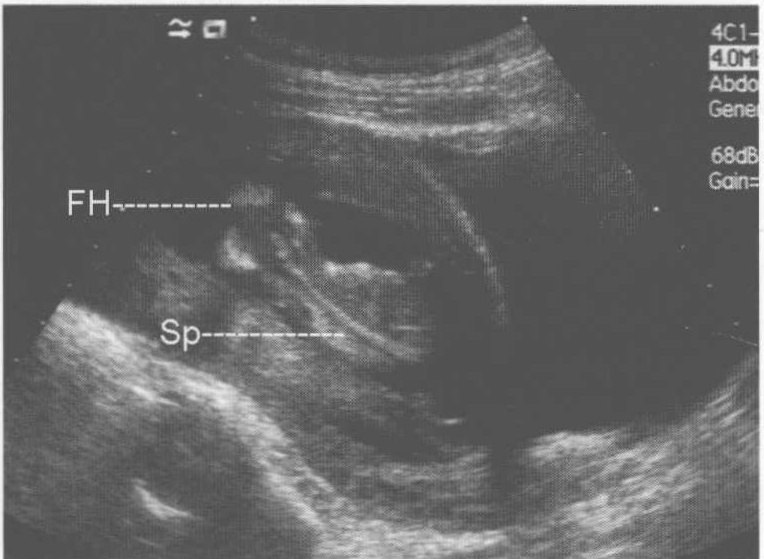
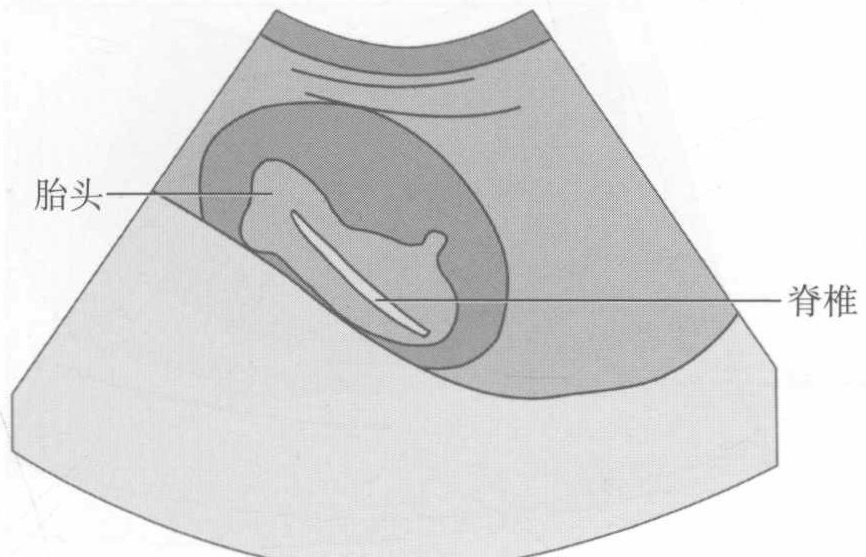
图13-8 孕10～12周，胎儿冠状切面
【扫查方法】 患者平卧位，膀胱适度充盈，暴露下腹部，将探头置于腹中线耻骨联合上方。
【断面结构】子宫纵切面，胎儿冠状切面。可显示头颅、脊柱、胸腹及上肢。
【测量方法】 在此切面可观察脊柱的串珠样强回声是否排列整齐。
【临床价值】 妊娠10～12周时可以清晰显示脊柱结构。在此切面或胎儿矢状切面重点观察脊柱排列是否整齐，连续性是否完好，特别是骶椎骨。胎儿主要器官均已形成。
（九） 胎儿长轴正中矢状切面（图13-9）
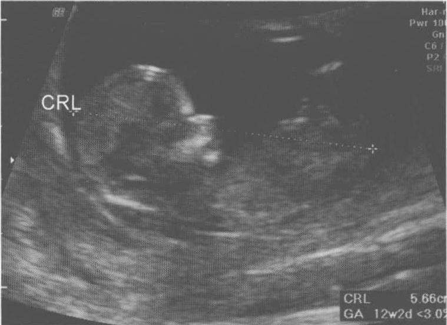
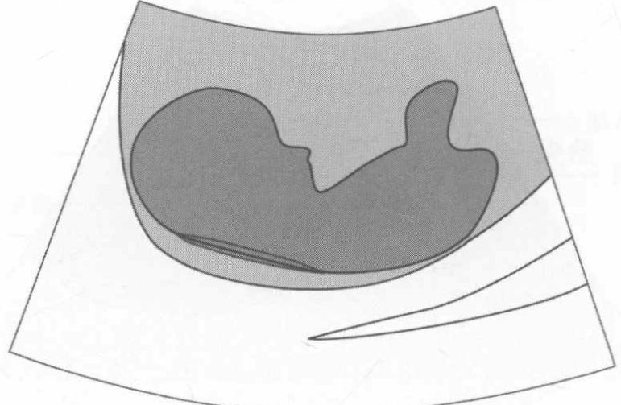
图13-9 胎儿长轴正中矢状切面
【扫查方法】 移动探头显示胎儿长轴正中矢状切面。
【断面结构】显示胎儿头部、侧面轮廓与躯干部，并显示鼻骨。
【测量方法】从胎头顶部至胎儿尾端测量最大头臀径长度，要求胎儿呈自然弯曲状态，不过度俯曲，不仰伸。
【临床价值】早孕期顶臀长是判断胎龄较准确的指标，最佳孕周为7～10周，因为此时的胎儿头臀边界清晰，胎体运动相对较少。同时，顶臀长也是准确测量NT的必备条件，只有在头臀长在45～84mm时才测量NT。
（十）胎儿颈项透明层（nuchal translucency，NT）（图13-10）
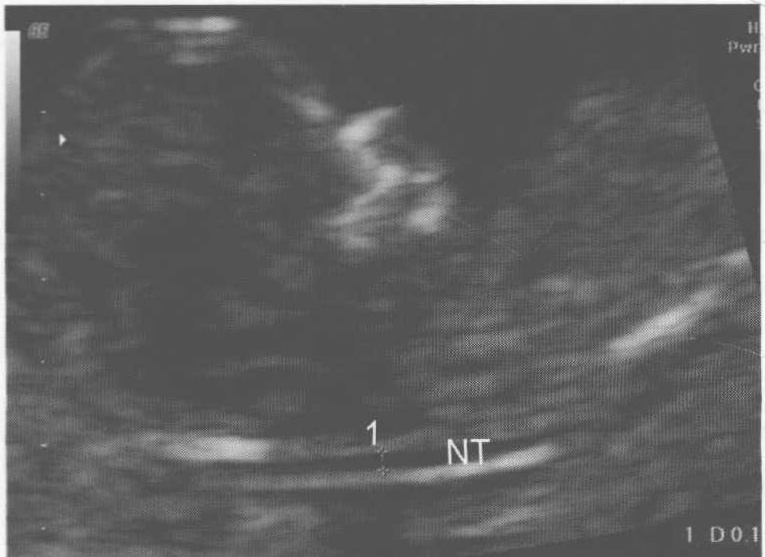
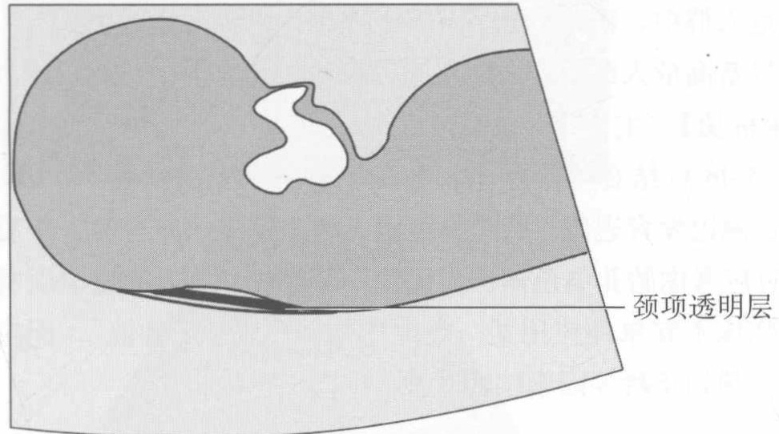
图13-10 胎儿颈项透明层（nuchal translucency, NT）
注：1. 所测量的距离代表NT厚度
【扫查方法】与顶臀径测量为同一切面。需要将图像放大，使胎儿面积占屏幕的2/3左右。
【断面结构】显示胎儿头部与胸部，正中矢状切面，显示鼻骨，显示清晰胎儿颈后部的透明层纵断面，透明层指颈部皮下的无回声带。
【测量方法及正常值】 测量胎儿颈后透明层最宽处的厚度。注意：①顶臀长测量应为45～84mm（11周0天～13周6天）；②胎儿应取正中矢状切面；③胎儿颈部应在中间位置；④胎儿图像需放大，占银屏的75%；⑤必须区别羊膜与胎儿皮肤；⑥将测量键放置在透明层双侧强回声线的内侧缘上；⑦测量三次，用最大的数值作为风险计算。于孕11周～13周6天间、顶臀长45～84mm时测量NT，测量3次后取测值最大的一次作为测量结果。11～13周6天颈项透明层厚度随孕周的增加而增加。据报道，在胎儿染色体正常与低危人群中，粗略判断NT的中位数为1.5mm，95th%为2.4mm；而胎儿染色体异常高危人群中，NT的中位数为1.5mm，95th%为2.5mm。
【临床价值】 主要用于预测胎儿染色体异常风险率计算，与母血 PAPP-A 及游离 β-hCG 结合可筛出 90% 的染色体异常胎儿。另外，NT 增厚与早期心力衰竭、淋巴发育迟缓、胎儿胸腔压力增高等疾病亦有关。一般认为， NT ≥ 2.5 mm 时应考虑胎儿染色体异常风险率较高。但 NT 值随孕周增加呈非线性增长，因此临床不宜单纯应用某一数值作为 NT 的 “正常值”，而应将 NT 与头臀径长度、孕妇年龄等因素综合考虑。
二、 中晚期妊娠
中期妊娠是指妊娠满12周（即第13周）至孕27.6周，晚孕期是指孕28周至孕40周这段妊娠期的最后阶段，其中妊娠满37周又称为“足月妊娠”。近年来，英国胎儿医学基金会对超声早孕的定义稍作更改，凡妊娠14周之前均归入早孕期。
中期妊娠与晚期妊娠均是胎儿进一步生长、发育、长大的阶段，大部分结构在超声声像图上表现相似。
（一） 超声判断胎位及胎方位
1. 胎位的判断
（1）纵产式头位
【扫查方法】将探头在母体表面纵向及横向顺序扫查，得出胎儿长轴与母体
长轴的关系。当胎儿纵轴与母体纵轴一致时，为纵产式（图13-11，图13-12）；当胎儿纵轴与母体纵轴相互垂直时，为横产式。
【断面结构】图左为母体头侧，图右为母体足侧。胎儿纵轴与母体纵轴一致时，为纵产式。图13-11为纵产式头位，胎头朝向母体足侧。
【临床价值】确定胎位，有助于胎儿形态结构的检查及产科处理。
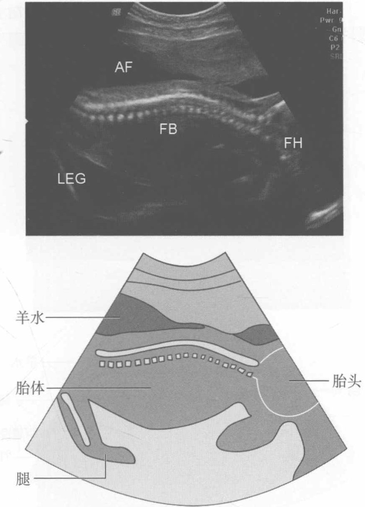
图13-11 纵产式头位
（2） 纵产式臀位
【扫查方法】将探头在母体表面纵向及横向顺序扫查，当胎儿纵轴与母体纵轴一致且胎头朝向母体头侧时为纵产式臀位（图13-12）。
【断面结构】图左为母体头侧，图右为母体足侧。胎儿纵轴与母体纵轴一致、胎头朝向母体头侧。
【临床价值】确定胎位，有助于胎儿形态结构的检查及产科处理。
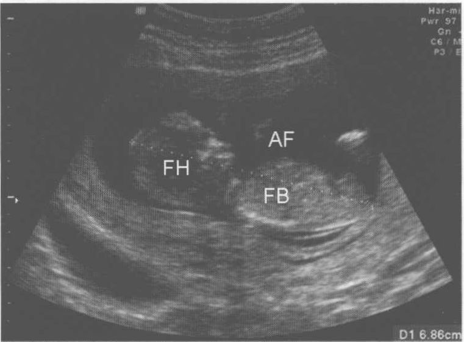
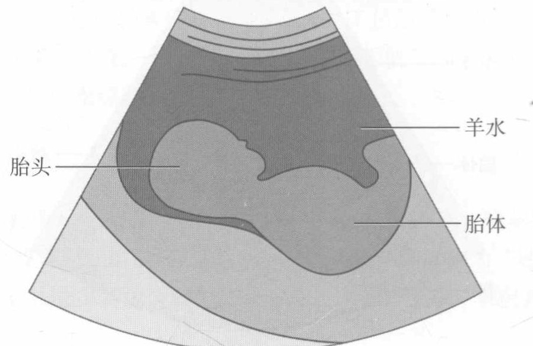
图13-12 纵产式臀位
2. 胎方位的判断
(1) 枕先露（枕左前位，LOA）
【扫查方法】 探头于耻骨上探及胎头且胎儿为纵产式，此时为头位。头位时，若胎儿颅骨最先进入骨盆时称“头先露”，头先露以枕骨（OC）为指示点，枕骨位于母体骨盆左前方时胎方位为“枕左前位”。
【断面结构】枕左前位（LOA）时，丘脑平面见脑中线向左上偏斜，胎头枕骨指向母体左前方（图13-13）。
【临床价值】确定胎方位，有助于胎儿形态结构的检查及产科处理。
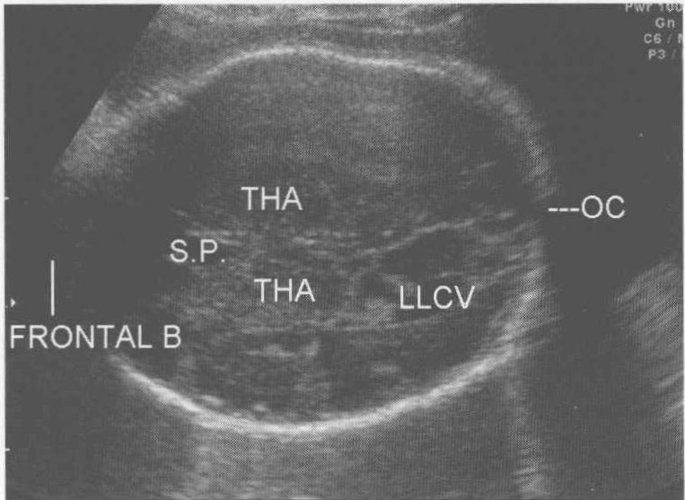
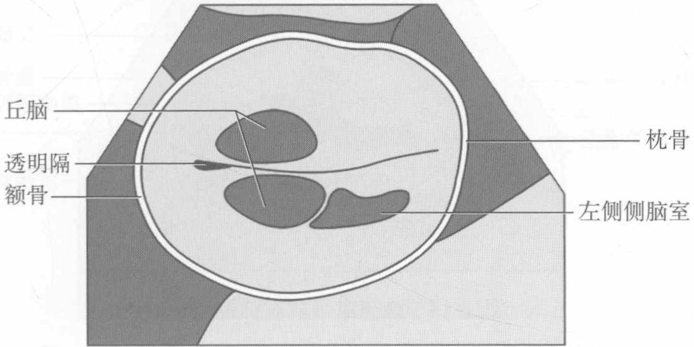
图13-13 枕先露（枕左前位，LOA）
(2) 枕先露（枕右前位，ROA）
【扫查方法】 探头于耻骨上探及胎头且胎儿为纵产式，此时为头位。头先露时以枕骨（OC）为指示点，枕骨位于母体骨盆右前方时胎方位为“枕右前位”。【断面结构】 枕右前位（ROA）时，丘脑平面见脑中线向右上偏斜，胎头枕骨指向母体右前方（图13-14）。
【临床价值】确定胎方位，有助于胎儿形态结构的检查及产科处理。
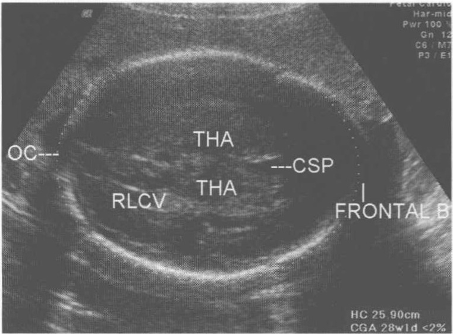
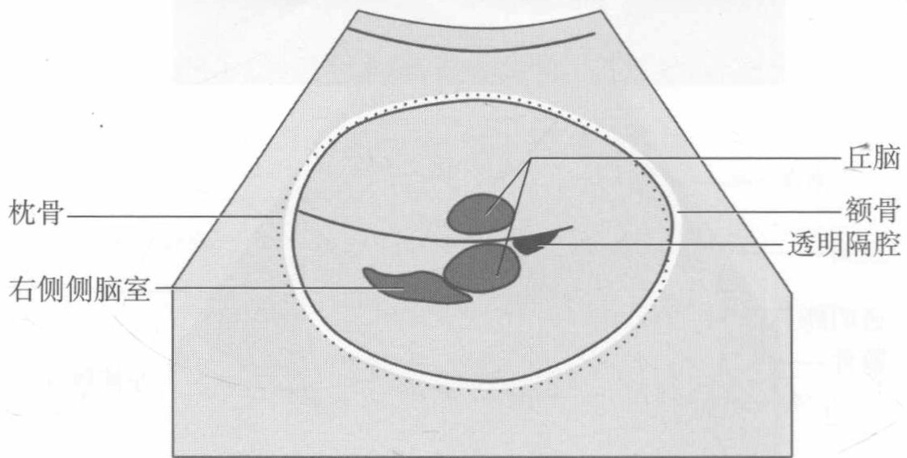
图13-14 枕先露（枕右前位，ROA）
（二） 解剖结构观察及主要测量
通过特定的切面观察胎儿解剖结构并测量一些特定的胎儿径线，是评价胎儿生长发育的重要方法。一般可用于估计胎儿大小、胎龄、预测胎儿体重等，具有重要的临床价值。某些胎儿畸形或染色体异常的疾病也可能表现为径线异常。
1. 丘脑平面
（1）侧脑室后角宽度测量（臀位胎儿，丘脑平面）（图13-15）
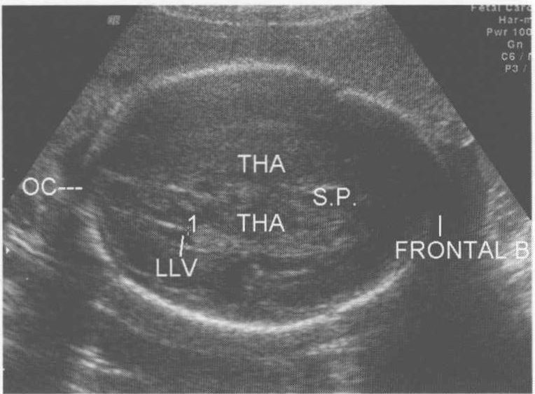
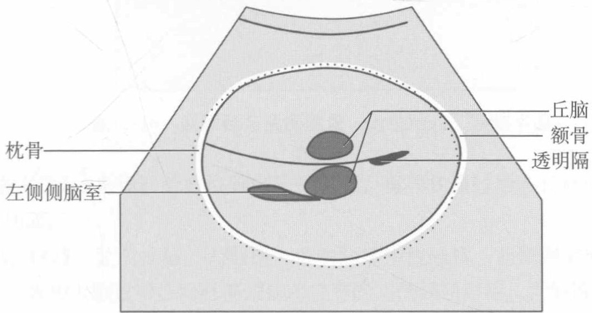
图13-15 侧脑室后角宽度测量（臀位胎儿，丘脑平面）
注：1. 左侧侧脑室后角宽度（4.2mm）
【扫查方法】 先根据胎方位确定胎头位置，再寻找通过胎儿丘脑的枕额方向的横切面。
【断面结构】应显示丘脑、大脑镰、透明隔等中线结构，双侧侧脑室，以及周围的脑白质和大脑皮质。同时要求显示完整的头颅光环，大脑镰居中。图像近区一侧的侧脑室因混响效应一般显示不清。
【测量方法及正常值】 显示侧脑室体部及后角，在最宽处从一侧室管膜内缘到对侧室管膜内缘（图中测量键所示）。测量时可以包括脉络膜。侧脑室后角宽度正常＜10mm。
【临床价值】通过测量侧脑室后角宽度可了解胎儿脑脊液循环状态，除外脑室扩张、脑积水等异常。
(2) 双顶径与头围测量（臀位胎儿，丘脑平面）（图 13-16）
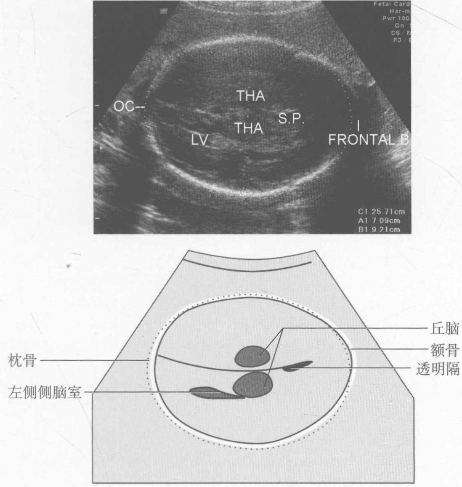
图13-16 双顶径与头围测量（臀位胎儿，丘脑平面）
【扫查方法】先根据胎方位确定胎头位置，再寻找通过胎儿丘脑的枕额方向的横切面。
【断面结构】显示丘脑、大脑镰、透明隔等中线结构、双侧侧脑室以及周围的脑白质和大脑皮质。同时要求显示完整的头颅强回声环，大脑镰居中。
【测量方法及正常值】头围：沿颅骨环外缘测量其周径即头围（C1）；双顶径：从一侧顶骨的外缘到对侧顶骨的外缘，测量与中线垂直的最大径线即双顶径（A1）。双顶径、头围正常值随孕周增长而变化（表13-2，表13-3）。
【临床价值】 双顶径因受胎头变形的影响而误差较大，但在一些实验室 Down 血清学筛查时仍然作为校正指标。头围因反映了整个胎头的轮廓大小，较双顶径更客观。
表 13-2 胎儿双顶径正常值
| 孕周 | 双顶径（mm） | ||||
| 3th% | 10th% | 50th% | 90th% | 97th% | |
| 10 | 9.4 | 10.1 | 11.6 | 13.1 | 13.8 |
| 11 | 13.0 | 13.8 | 15.4 | 17.1 | 17.8 |
| 12 | 16.7 | 17.5 | 19.3 | 21.0 | 21.8 |
| 13 | 20.3 | 21.2 | 23.1 | 24.9 | 25.8 |
| 14 | 23.9 | 24.8 | 26.8 | 28.8 | 29.8 |
| 15 | 27.5 | 28.4 | 30.6 | 32.7 | 33.7 |
| 16 | 30.9 | 32.0 | 34.2 | 36.5 | 37.5 |
| 17 | 34.4 | 35.5 | 37.8 | 40.2 | 41.3 |
| 18 | 37.8 | 39.0 | 41.4 | 43.9 | 45.1 |
| 19 | 41.1 | 42.4 | 44.9 | 47.5 | 48.7 |
| 20 | 44.4 | 45.7 | 48.4 | 51.1 | 52.4 |
| 21 | 47.6 | 49.0 | 51.8 | 54.6 | 56.0 |
| 22 | 50.8 | 52.2 | 55.1 | 58.1 | 59.5 |
| 23 | 53.9 | 55.3 | 58.4 | 61.5 | 62.9 |
| 24 | 56.9 | 58.4 | 61.6 | 64.8 | 66.3 |
| 25 | 59.9 | 61.4 | 64.7 | 68.1 | 69.6 |
| 26 | 62.8 | 64.4 | 67.8 | 71.2 | 72.8 |
| 27 | 65.6 | 67.2 | 70.8 | 74.3 | 76.0 |
| 28 | 68.3 | 70.0 | 73.7 | 77.4 | 79.1 |
| 29 | 70.9 | 72.7 | 76.5 | 80.3 | 82.1 |
| 30 | 73.5 | 75.3 | 79.2 | 83.1 | 85.0 |
| 31 | 75.9 | 77.8 | 81.8 | 85.9 | 87.8 |
| 32 | 78.3 | 80.2 | 84.4 | 88.5 | 90.5 |
| 33 | 80.5 | 82.6 | 86.8 | 91.1 | 93.1 |
| 34 | 82.7 | 84.8 | 89.2 | 93.6 | 95.6 |
| 35 | 84.8 | 86.9 | 91.4 | 95.9 | 98.0 |
| 36 | 86.7 | 88.9 | 93.5 | 98.2 | 100.4 |
| 37 | 88.6 | 90.8 | 95.6 | 100.3 | 102.6 |
| 38 | 90.3 | 92.6 | 97.5 | 102.4 | 104.7 |
| 39 | 91.9 | 94.3 | 99.3 | 104.3 | 106.6 |
| 40 | 93.5 | 95.9 | 101.0 | 106.1 | 108.5 |
表 13-3 胎儿头围正常值
| 孕周 | 头围（mm） | ||||
| 3th% | 10th% | 50th% | 90th% | 97th% | |
| 10 | 38.6 | 40.3 | 43.9 | 47.5 | 49.2 |
| 11 | 50.2 | 52.1 | 56.1 | 60.2 | 62.0 |
| 12 | 62.1 | 64.2 | 68.6 | 73.1 | 75.1 |
| 13 | 74.3 | 76.5 | 81.4 | 86.2 | 88.5 |
| 14 | 86.6 | 89.0 | 94.3 | 99.5 | 101.9 |
| 15 | 99.0 | 101.6 | 107.2 | 112.9 | 115.5 |
| 16 | 111.4 | 114.2 | 120.3 | 126.3 | 129.1 |
| 17 | 123.8 | 126.8 | 133.3 | 139.7 | 142.7 |
| 18 | 136.2 | 139.4 | 146.2 | 153.0 | 156.2 |
| 19 | 148.4 | 151.8 | 159.0 | 166.3 | 169.7 |
| 20 | 160.5 | 164.1 | 171.7 | 179.3 | 182.9 |
| 21 | 172.4 | 176.1 | 184.2 | 192.2 | 196.0 |
| 22 | 184.0 | 188.0 | 196.4 | 204.9 | 208.8 |
| 23 | 195.4 | 199.5 | 208.4 | 217.2 | 221.4 |
| 24 | 206.4 | 210.8 | 220.0 | 229.3 | 233.6 |
| 25 | 217.1 | 221.7 | 231.3 | 240.9 | 245.5 |
| 26 | 227.5 | 232.2 | 242.2 | 252.3 | 257.0 |
| 27 | 237.4 | 242.3 | 252.7 | 263.1 | 268.0 |
| 28 | 246.8 | 251.9 | 262.7 | 273.6 | 278.7 |
| 29 | 255.8 | 261.1 | 272.3 | 283.6 | 288.8 |
| 30 | 264.2 | 269.7 | 281.4 | 293.0 | 298.5 |
| 31 | 272.2 | 277.8 | 289.9 | 301.9 | 307.6 |
| 32 | 279.5 | 285.4 | 297.8 | 310.3 | 316.1 |
| 33 | 286.3 | 292.3 | 305.2 | 318.1 | 324.1 |
| 34 | 292.5 | 298.7 | 312.0 | 325.2 | 331.4 |
| 35 | 298.0 | 304.4 | 318.1 | 331.7 | 338.1 |
| 36 | 302.9 | 309.5 | 323.5 | 337.6 | 344.2 |
| 37 | 307.0 | 313.8 | 328.3 | 342.7 | 349.5 |
| 38 | 310.5 | 317.5 | 332.3 | 347.2 | 354.2 |
| 39 | 313.2 | 320.4 | 335.7 | 350.9 | 358.1 |
| 40 | 315.2 | 322.6 | 338.2 | 353.9 | 361.3 |
2. 小脑平面
小脑平面颅脑横切面（图13-17）
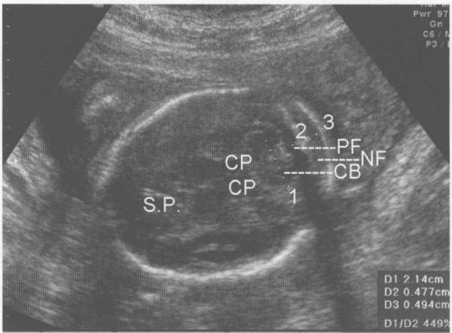
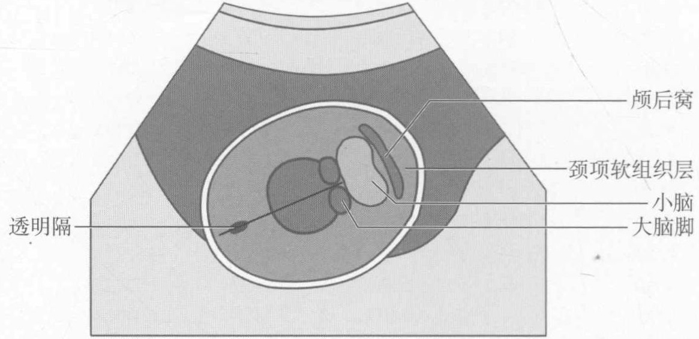
图13-17 小脑平面颅脑横切面
注：1. 小脑横径；2. 颅后窝池宽度；3. 颈项软组织厚度；S.P. 透明隔；CP. 大脑脚；CB. 小脑；PF. 颅后窝；NF. 颈项软组织层
【扫查方法】 横切胎头，于头围平面下移探头，并稍向颅底方向倾斜，寻找通过小脑横断面及透明隔的横切面。
【断面结构】显示颅后窝内的小脑横切面、颅后窝池、颈项软组织以及前方的透明隔，同时显示完整的颅骨光环。
【测量方法及正常值】 测量方法：①小脑横径（1）：从一侧小脑半球的外缘到对侧小脑半球的外缘；②后颅窝池宽度（2）：从小脑蚓部的后缘到枕部颅骨板的内缘；③颈项软组织厚度（3）：孕18～23周6天时在小脑平面测量，
从枕骨外缘到皮肤外缘。正常值：①小脑横径：随孕周增长而变化（表13-4）；②颅后窝池：正常小于10mm；③颈项软组织厚度：正常小于6mm。
【临床价值】 ①小脑横径：是衡量小脑发育及胎儿发育的一项指标。②颅后窝池宽度：反映脑室系统（包括脑池）有否扩张。如扩张，注意小脑蚓部是否缺失，小脑两半球是否分离，以排除Dandy-Walker综合征。③颈项软组织厚度：是遗传学超声软指标，也可反映胎儿淋巴系统回流情况，并有助于判断胎儿水肿、早期心力衰竭等。
表 13-4 胎儿小脑横径正常值
| 孕周 | 小脑横径（mm） | ||||
| 3th% | 10th% | 50th% | 90th% | 97th% | |
| 16 | 14.1 | 14.6 | 15.5 | 16.4 | 16.8 |
| 17 | 15.1 | 15.5 | 16.6 | 17.6 | 18.1 |
| 18 | 16.1 | 16.6 | 17.7 | 18.8 | 19.4 |
| 19 | 17.2 | 17.7 | 19.0 | 20.2 | 20.7 |
| 20 | 18.3 | 18.9 | 20.3 | 21.6 | 22.2 |
| 21 | 19.5 | 20.2 | 21.6 | 23.0 | 23.7 |
| 22 | 20.8 | 21.5 | 23.1 | 24.6 | 25.3 |
| 23 | 22.2 | 22.9 | 24.6 | 26.2 | 26.9 |
| 24 | 23.6 | 24.4 | 26.1 | 27.8 | 28.6 |
| 25 | 25.1 | 25.9 | 27.7 | 29.6 | 30.4 |
| 26 | 26.6 | 27.5 | 29.4 | 31.3 | 32.2 |
| 27 | 28.3 | 29.2 | 31.2 | 33.2 | 34.2 |
| 28 | 29.9 | 30.9 | 33.0 | 35.1 | 36.1 |
| 29 | 31.7 | 32.7 | 34.9 | 37.1 | 38.2 |
| 30 | 33.5 | 34.6 | 36.9 | 39.2 | 40.3 |
| 31 | 35.4 | 36.5 | 38.9 | 41.3 | 42.5 |
| 32 | 37.3 | 38.5 | 41.0 | 43.5 | 44.7 |
| 33 | 39.4 | 40.6 | 43.2 | 45.8 | 47.0 |
| 34 | 41.5 | 42.7 | 45.4 | 48.1 | 49.4 |
| 35 | 43.6 | 44.9 | 47.7 | 50.5 | 51.8 |
| 36 | 45.8 | 47.2 | 50.1 | 53.0 | 54.3 |
3. 面部
（1） 面部冠状切面
【扫查方法】由胎儿额部向前向下作冠状切面，在不同的水平可分别显示双
侧眼眶的冠状切面以及口唇的冠状切面。
【断面结构】图13-18的图左显示双侧眼眶的冠状切面，眼眶（OR）周边为强回声的眼眶，框内为低回声的眼球，其内可见晶状体（P）呈一小圆光环位于眼球内偏前方。图13-18的右图显示口唇的冠状切面，要求显示上唇（M）以及鼻尖（N，含2个鼻孔）。
【临床价值】通过眼眶的冠状切面，判断有无眼眶及眼球的发育异常。另有作者在眼眶的冠状切面测量眶间距。通过观察口唇的冠状切面，了解鼻尖与口唇的形态，诊断唇裂、单鼻孔畸形等。
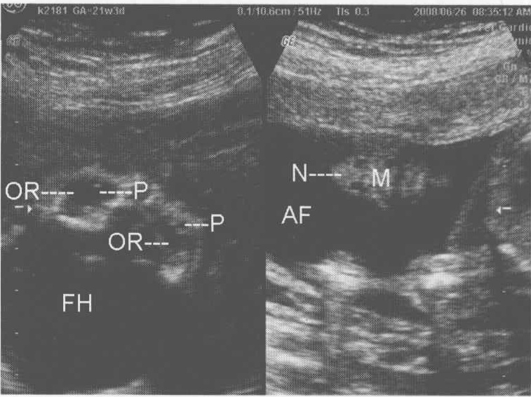
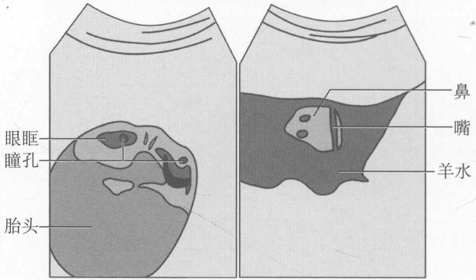
图13-18 面部冠状切面
注：图左显示双侧眼眶及瞳孔；图右显示鼻尖（双侧鼻孔）、口唇
(2) 面部冠状切面，上腭弓横切面 (图 13-19)
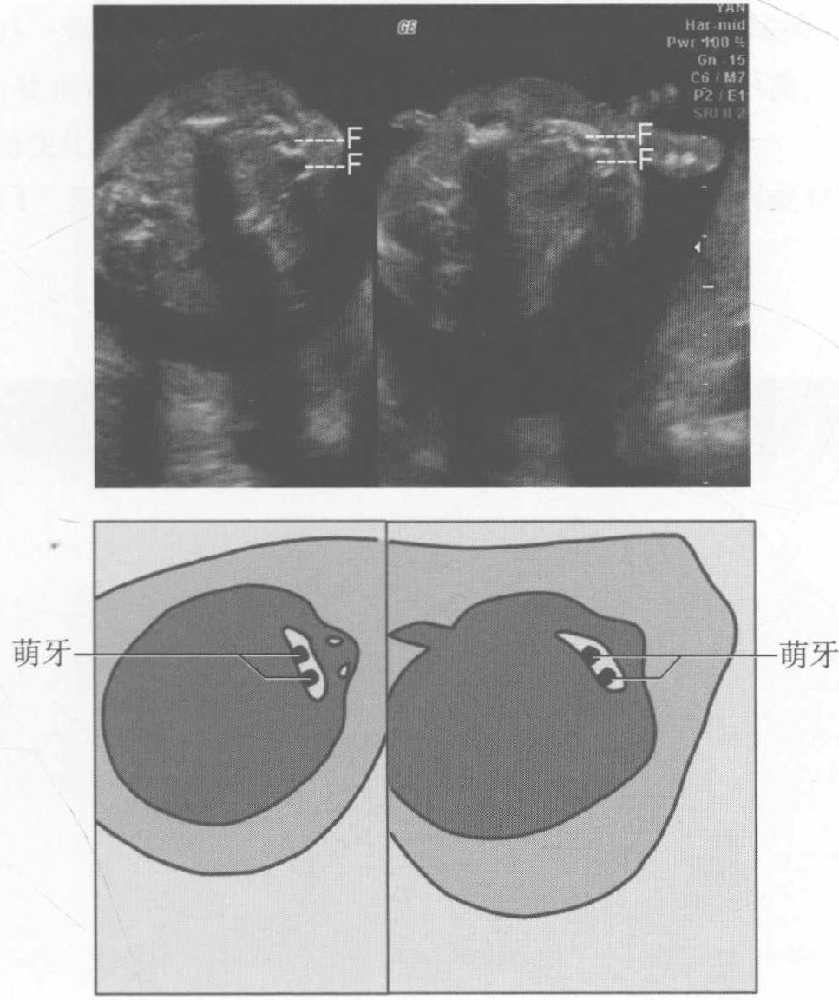
图13-19 面部冠状切面，上腭弓横切面
【扫查方法】由胎儿额部向前向下做面部的冠状切面，旋转探头后做上腭弓的横切面。
【断面结构】 显示中央的2个萌牙及其两侧的弧形光环。
【临床价值】有助于了解上腭弓的发育情况，诊断腭裂。
（3） 面部正中矢状切面（鼻骨长度测量）（图13-20）
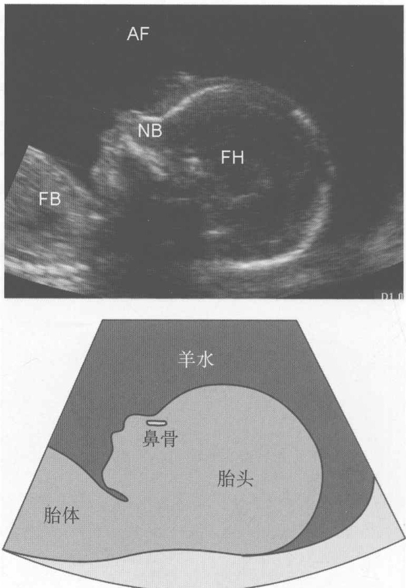
图13-20 面部正中矢状切面（鼻骨长度测量）
【扫查方法】由胎儿额部向前向下做面部的冠状切面，旋转探头后做脸部矢状切面。
【断面结构】旁正中矢状切面，显示鼻骨呈短棒状、强回声结构。
【测量方法及正常值】鼻骨长度：测量鼻骨上缘至下缘的距离。鼻骨长度随孕周增长而变化其正常值见表13-5。
【临床价值】鼻骨长度为染色体异常软指标，并可除外一侧或双侧鼻骨缺失等异常。
表 13-5 胎儿鼻骨长度正常值
| 孕周 | 例数 (n) | MoM | 0.75 MoM | 0.5 MoM | 0.25 MoM |
| 15 | 41 | 0.40 | 0.30 | 0.20 | 0.10 |
| 16 | 184 | 0.41 | 0.31 | 0.21 | 0.11 |
| 17 | 124 | 0.45 | 0.34 | 0.23 | 0.11 |
| 18 | 258 | 0.48 | 0.36 | 0.24 | 0.12 |
| 19 | 555 | 0.51 | 0.38 | 0.26 | 0.13 |
| 20 | 370 | 0.53 | 0.40 | 0.27 | 0.13 |
| 21 | 152 | 0.58 | 0.44 | 0.29 | 0.15 |
| 22 | 72 | 0.57 | 0.43 | 0.29 | 0.14 |
| 23 | 30 | 0.64 | 0.48 | 0.32 | 0.16 |
注：对黑种人、亚洲人和西班牙裔妇女，校正系数分别为1.06、0.98和1.01。MoM是一个比值，即孕妇体内标志物检测值除以相同孕周正常孕妇的中值数值
4. 颈部
（1）胎儿颈部纵切面（图13-21）
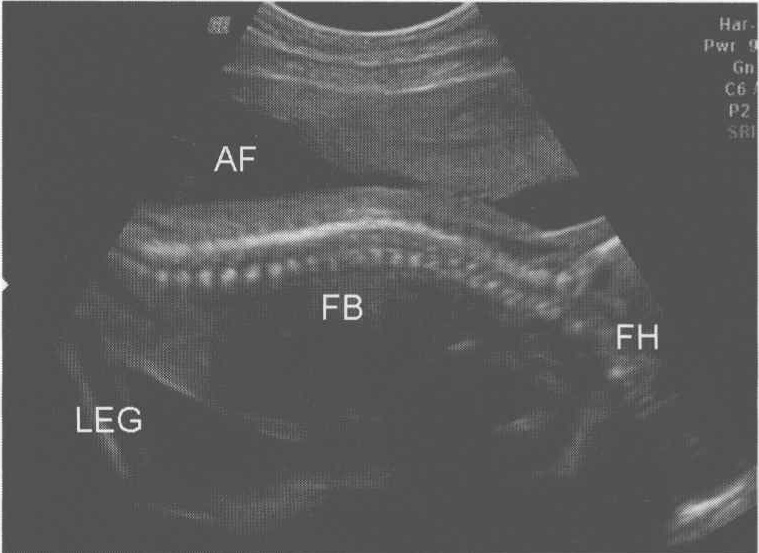
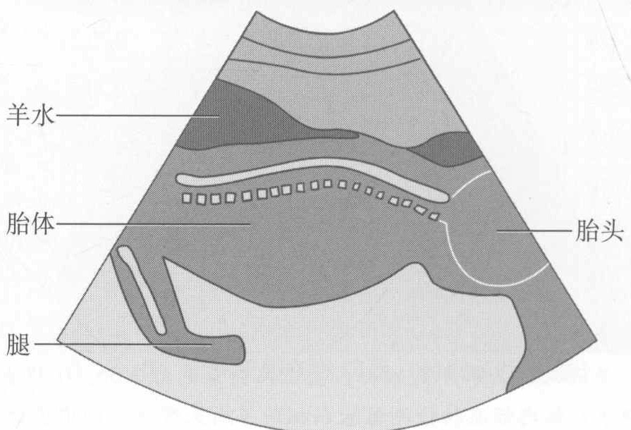
图13-21 胎儿颈部纵切面
【扫查方法】 显示颅脑结构后，探头向颅脑下方移动纵切胎儿颈部。
【断面结构】显示部分颅脑、颈部皮肤及颈椎纵切面。
【临床意义】在中晚孕时，正常情况下胎儿颈部皮肤表面光滑平整，颈部和子宫壁（或前壁胎盘）之间为无回声区（图13-21），无回声区清晰。
（2）胎儿颈部纵切面（脐带压迹）（图13-22）
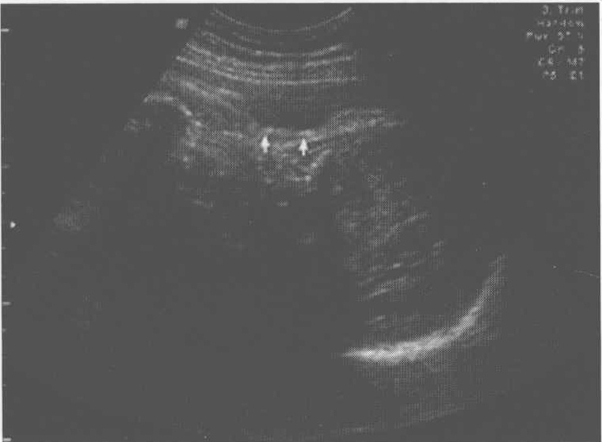
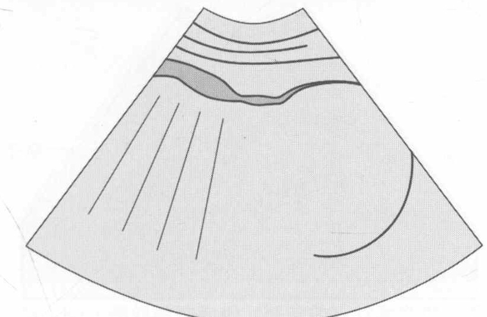
图13-22 胎儿颈部纵切面（脐带压迹）
注：箭头所指为颈部的脐带压迹呈W形
【扫查方法】 显示颅脑结构后，探头向颅脑下方移动纵切胎儿颈部。
【断面结构】 显示胎儿颅脑、颈椎纵切面，颈部皮肤及皮肤表面的压迹（图中呈 W 形）。
【临床意义】颈部皮肤表面有压迹时，可能为脐带经过颈部，也可能为脐带缠绕颈部，需要做彩色多普勒超声以助进一步诊断。
（3）胎儿颈部纵切面图（脐带彩色血流图）（图13-23）
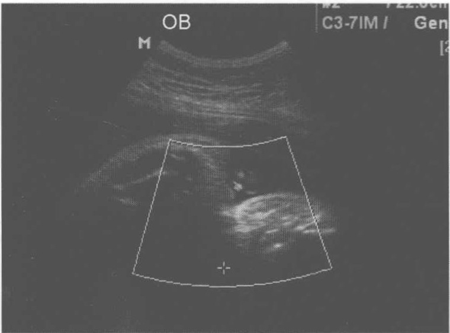
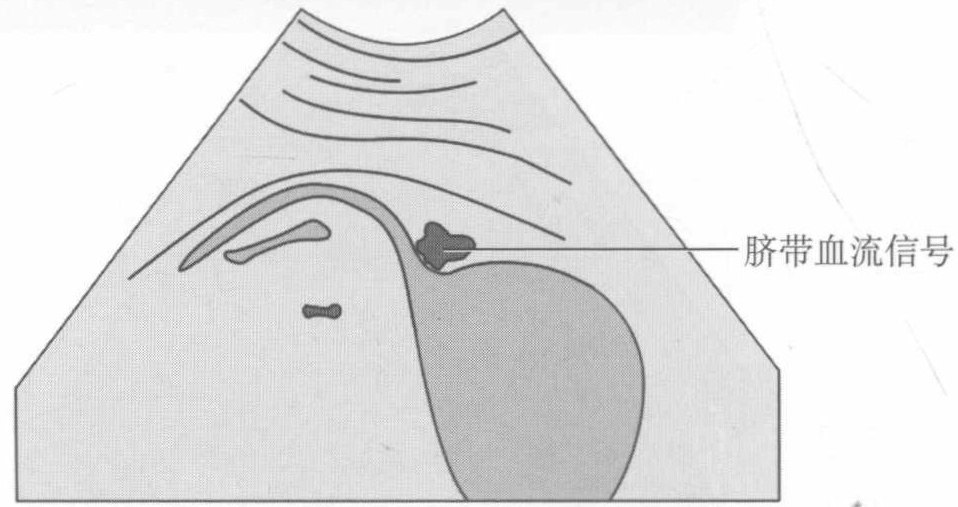
图13-23 胎儿颈部纵切面图（脐带横断面的彩色血流信号）
【扫查方法】显示颅脑结构后，探头向颅脑下方移动纵切胎儿颈部。并加以彩色多普勒超声显像。
【断面结构】 显示胎儿颅脑、颈椎纵切面、颈部皮肤、皮肤表面的压迹以及彩色血流图。
【临床意义】当二维超声显示颈部有压迹时，彩超可以帮助证实压迫颈部的结构内部有无血流，以助判断是否血管（脐血管）结构。
（4）胎儿颈部横切面图（脐带彩色血流图）（图 13-24）
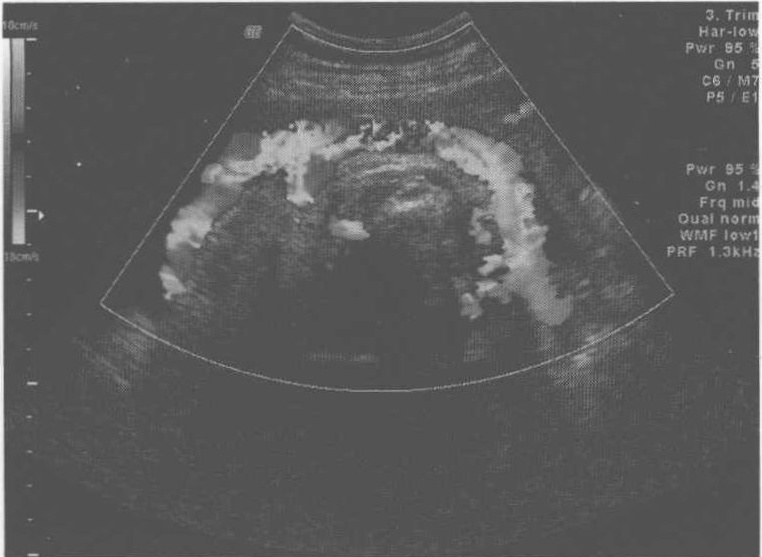
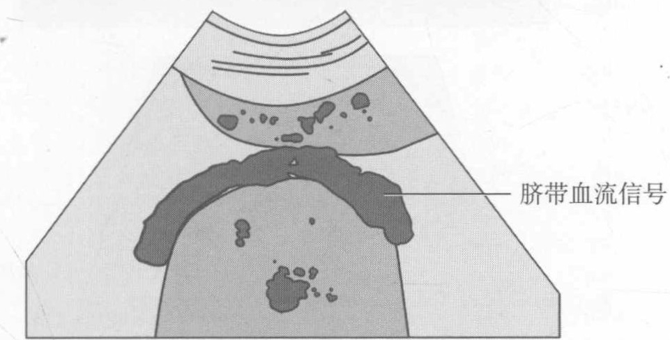
图13-24 胎儿颈部横切面图（脐带的环状彩色血流信号）
【断面结构】显示胎儿颈椎横切面、颈部皮肤以及彩色血流图。
【扫查方法】 显示颅脑结构后，探头向颅脑下方移动横切胎儿颈部。
【临床意义】 彩超显示脐动静脉血流信号环绕颈部时，有助于诊断脐带绕颈，鉴别“脐带经过颈部”。后者没有环绕颈部。
5. 心脏
（1）胎儿四腔心切面（图13-25）
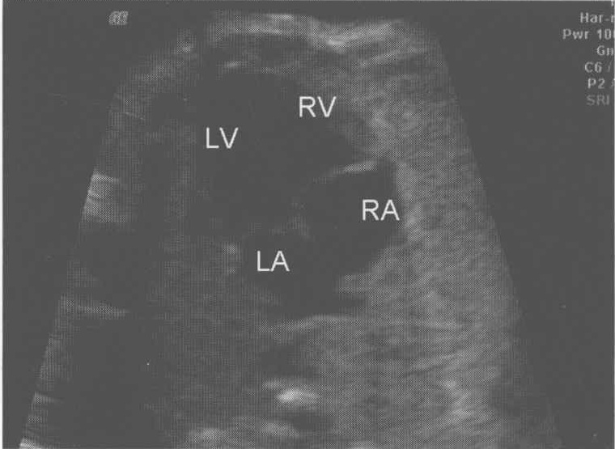
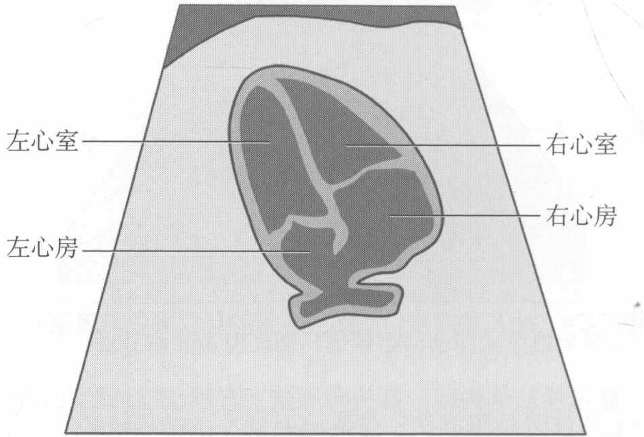
图13-25 胎儿四腔心切面
【扫查方法】与胎儿长轴垂直做通过四腔心切面的胸部横切面。
【断面结构】显示①左右心房、原发性房间隔、卵圆孔瓣膜开向左房、2根肺静脉开口回流入左房；②左右心室、右心室乳头肌及腱索、室间隔；③心内膜垫十字交叉，左右房室瓣膜。
【测量方法及正常值】在心室舒张末期测量心室内径（横径与前后径），在心房舒张末期测量心房内径（横径与前后径）。多普勒超声或M型超声测量胎心率。心室、心房正常值随孕周增长而变化（表13-6，表13-7）。
【临床价值】为胎儿心脏畸形筛查的基础切面，可发现50%～60%的先天性
心脏畸形，包括左心或右心发育不良、共同房室通道、三尖瓣下移、右位心等。胎心率的测量，有助于诊断心动过速、过缓及心律失常。
表 13-6 胎儿心室正常值
| 孕周 | 左心室 (LV) | 右心室 (RV) | 左心室 / 右心室 (LV/RV) | ||||||
| P2.5 | LV | P97.5 | P2.5 | RV | P97.5 | P2.5 | LV/RV | P97.5 | |
| 14 | 0.10 | 0.23 | 0.37 | 0.12 | 0.24 | 0.37 | 0.75 | 0.99 | 1.23 |
| 15 | 0.16 | 0.30 | 0.45 | 0.18 | 0.31 | 0.45 | 0.74 | 0.99 | 1.23 |
| 16 | 0.21 | 0.37 | 0.53 | 0.23 | 0.38 | 0.53 | 0.74 | 0.99 | 1.23 |
| 17 | 0.26 | 0.43 | 0.61 | 0.28 | 0.44 | 0.61 | 0.74 | 0.99 | 1.24 |
| 18 | 0.31 | 0.50 | 0.68 | 0.33 | 0.50 | 0.69 | 0.73 | 0.99 | 1.24 |
| 19 | 0.36 | 0.56 | 0.75 | 0.37 | 0.56 | 0.76 | 0.73 | 0.98 | 1.24 |
| 20 | 0.40 | 0.61 | 0.82 | 0.42 | 0.62 | 0.84 | 0.72 | 0.98 | 1.24 |
| 21 | 0.45 | 0.67 | 0.89 | 0.46 | 0.68 | 0.91 | 0.72 | 0.98 | 1.24 |
| 22 | 0.49 | 0.72 | 0.96 | 0.51 | 0.74 | 0.98 | 0.71 | 0.97 | 1.24 |
| 23 | 0.53 | 0.77 | 1.02 | 0.55 | 0.79 | 1.05 | 0.71 | 0.97 | 1.23 |
| 24 | 0.56 | 0.82 | 1.08 | 0.59 | 0.84 | 1.12 | 0.70 | 0.97 | 1.23 |
| 25 | 0.59 | 0.87 | 1.14 | 0.63 | 0.90 | 1.18 | 0.69 | 0.96 | 1.23 |
| 26 | 0.62 | 0.91 | 1.20 | 0.67 | 0.95 | 1.25 | 0.69 | 0.96 | 1.23 |
| 27 | 0.65 | 0.95 | 1.25 | 0.70 | 1.00 | 1.31 | 0.68 | 0.95 | 1.22 |
| 28 | 0.68 | 0.99 | 1.30 | 0.74 | 1.05 | 1.38 | 0.67 | 0.95 | 1.22 |
| 29 | 0.70 | 1.03 | 1.35 | 0.77 | 1.09 | 1.44 | 0.66 | 0.94 | 1.22 |
| 30 | 0.73 | 1.06 | 1.40 | 0.80 | 1.14 | 1.50 | 0.65 | 0.93 | 1.21 |
| 31 | 0.74 | 1.09 | 1.44 | 0.83 | 1.18 | 1.56 | 0.64 | 0.93 | 1.21 |
| 32 | 0.76 | 1.12 | 1.49 | 0.86 | 1.22 | 1.61 | 0.63 | 0.92 | 1.20 |
| 33 | 0.78 | 1.15 | 1.53 | 0.89 | 1.26 | 1.67 | 0.62 | 0.91 | 1.20 |
| 34 | 0.79 | 1.18 | 1.56 | 0.92 | 1.30 | 1.72 | 0.61 | 0.90 | 1.19 |
| 35 | 0.80 | 1.20 | 1.60 | 0.94 | 1.34 | 1.78 | 0.60 | 0.89 | 1.18 |
| 36 | 0.81 | 1.22 | 1.63 | 0.97 | 1.38 | 1.83 | 0.59 | 0.88 | 1.18 |
| 37 | 0.81 | 1.24 | 1.66 | 0.99 | 1.42 | 1.88 | 0.58 | 0.87 | 1.17 |
| 38 | 0.82 | 1.25 | 1.69 | 1.01 | 1.45 | 1.93 | 0.56 | 0.86 | 1.16 |
| 39 | 0.82 | 1.27 | 1.72 | 1.03 | 1.48 | 1.98 | 0.55 | 0.85 | 1.15 |
| 40 | 0.82 | 1.28 | 1.74 | 1.05 | 1.51 | 2.02 | 0.54 | 0.84 | 1.15 |
表 13-7 胎儿心房正常值
| 孕 周 | 左心房 | 右心房 | LA/RA | ||||||
| P2.5 | LA | P97.5 | P2.5 | RA | P97.5 | P2.5 | LA/RA | P97.5 | |
| 14 | 0.20 | 0.32 | 0.44 | 0.22 | 0.35 | 0.49 | 0.67 | 0.94 | 1.21 |
| 15 | 0.25 | 0.38 | 0.51 | 0.27 | 0.42 | 0.57 | 0.67 | 0.94 | 1.21 |
| 0.94 | 0.30 | 0.44 | 0.59 | 0.33 | 0.48 | 0.64 | 0.67 | 0.94 | 1.20 |
| 0.94 | 0.35 | 0.50 | 0.66 | 0.38 | 0.55 | 0.72 | 0.67 | 0.94 | 1.20 |
| 18 | 0.40 | 0.56 | 0.73 | 0.43 | 0.61 | 0.79 | 0.67 | 0.94 | 1.20 |
| 19 | 0.45 | 0.62 | 0.80 | 0.47 | 0.67 | 0.87 | 0.67 | 0.94 | 1.20 |
| 20 | 0.49 | 0.68 | 0.87 | 0.52 | 0.73 | 0.94 | 0.67 | 0.94 | 1.20 |
| 21 | 0.54 | 0.73 | 0.93 | 0.57 | 0.79 | 1.01 | 0.67 | 0.94 | 1.20 |
| 22 | 0.58 | 0.79 | 1.00 | 0.61 | 0.85 | 1.08 | 0.67 | 0.94 | 1.20 |
| 23 | 0.62 | 0.84 | 1.06 | 0.66 | 0.90 | 1.15 | 0.67 | 0.94 | 1.20 |
| 24 | 0.66 | 0.89 | 1.13 | 0.70 | 0.96 | 1.21 | 0.67 | 0.94 | 1.20 |
| 25 | 0.70 | 0.94 | 1.19 | 0.74 | 1.01 | 1.28 | 0.67 | 0.93 | 1.20 |
| 26 | 0.74 | 0.99 | 1.25 | 0.78 | 1.06 | 1.34 | 0.67 | 0.93 | 1.20 |
| 27 | 0.77 | 1.04 | 1.30 | 0.82 | 1.11 | 1.41 | 0.67 | 0.93 | 1.20 |
| 28 | 0.81 | 1.08 | 1.36 | 0.86 | 1.16 | 1.47 | 0.67 | 0.93 | 1.20 |
| 29 | 0.84 | 1.13 | 1.42 | 0.89 | 1.21 | 1.53 | 0.67 | 0.93 | 1.20 |
| 30 | 0.87 | 1.17 | 1.47 | 0.93 | 1.26 | 1.59 | 0.67 | 0.93 | 1.20 |
| 31 | 0.90 | 1.21 | 1.52 | 0.96 | 1.31 | 1.65 | 0.67 | 0.93 | 1.20 |
| 32 | 0.93 | 1.25 | 1.58 | 1.00 | 1.35 | 1.71 | 0.67 | 0.93 | 1.20 |
| 33 | 0.96 | 1.29 | 1.63 | 1.03 | 1.40 | 1.77 | 0.67 | 0.93 | 1.19 |
| 34 | 0.99 | 1.33 | 1.67 | 1.06 | 1.44 | 1.82 | 0.67 | 0.93 | 1.19 |
| 35 | 1.01 | 1.37 | 1.72 | 1.09 | 1.48 | 1.88 | 0.67 | 0.93 | 1.19 |
| 36 | 1.04 | 1.40 | 1.77 | 1.12 | 1.52 | 1.93 | 0.67 | 0.93 | 1.19 |
| 37 | 1.06 | 1.43 | 1.81 | 1.14 | 1.56 | 1.98 | 0.67 | 0.93 | 1.19 |
| 38 | 1.08 | 1.47 | 1.85 | 1.17 | 1.60 | 2.03 | 0.67 | 0.93 | 1.19 |
| 39 | 1.10 | 1.50 | 1.90 | 1.19 | 1.64 | 2.08 | 0.67 | 0.93 | 1.19 |
| 40 | 1.12 | 1.53 | 1.94 | 1.22 | 1.67 | 2.13 | 0.67 | 0.93 | 1.19 |
(2) 胎儿心脏四腔心观彩色血流图（图 13-26）
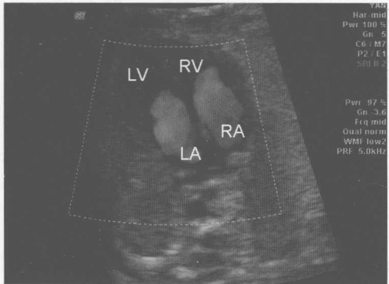
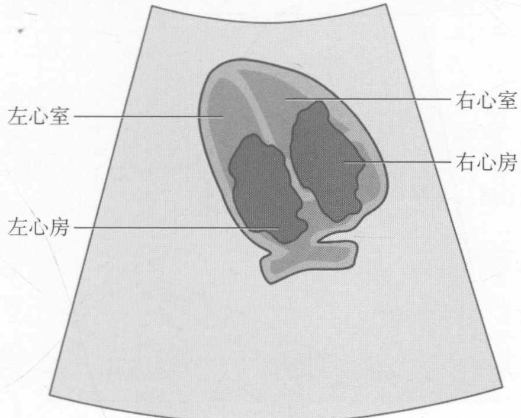
图13-26 胎儿心脏四腔心观彩色血流图（见彩图41）
注：红色血流代表血流从心房流向心室（朝向探头）
【扫查方法】与胎儿长轴垂直做通过四腔心切面的胸部横切面。
【断面结构】 显示① 左右心房、原发性房间隔、卵圆孔瓣膜开向左房、2 根肺静脉开口回流入左房；② 左右心室、室间隔，双侧房室瓣血流在方向、亮度及粗细上对称、一致。
【临床价值】为胎儿心脏畸形筛查的基础切面，可发现50%～60%的先天性心脏畸形。彩色多普勒血流图的应用，有助于更直观地判断双侧房室瓣的血流情况、诊断心脏畸形。
（3）胎儿心脏，左心室流出道切面（图13-27）
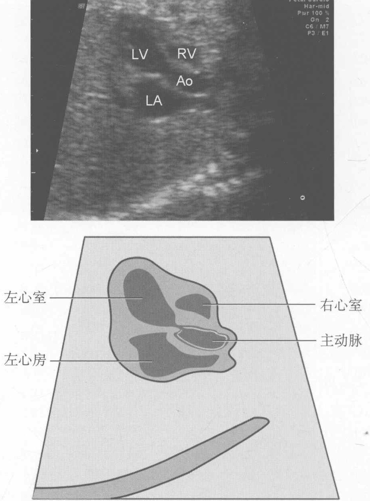
图13-27 胎儿心脏，左心室流出道切面
【扫查方法】 在四腔心基础上将探头向胎儿右上方或右肩方向旋转，获得左心长轴切面。
【断面结构】主要显示左室流出道、升主动脉、室间隔及室间隔右侧的右室。
【测量方法及正常值】 心室舒张期（主动脉瓣关闭时）测量主动脉内径。主动脉正常值随孕周增长而变化（表13-8）。
【临床价值】了解左心室流出道及从室间隔到升主动脉壁整条回声的连续性，有助于发现近流出道的膜部或膜周室缺，并协助诊断法洛四联症及其他大血管畸形。
表 13-8 胎儿主、肺动脉正常值
| 孕周 | 主动脉内径（AO） | 肺动脉内径（PA） | 主肺动脉内径之比（AO/PA） | ||||||
| P2.5 | P50 | P97.5 | P2.5 | PA | P97.5 | P2.5 | P50 | P97.5 | |
| 14 | 0.11 | 0.18 | 0.25 | 0.12 | 0.19 | 0.26 | 0.75 | 0.93 | 1.12 |
| 15 | 0.13 | 0.21 | 0.28 | 0.15 | 0.22 | 0.29 | 0.75 | 0.93 | 1.12 |
| 16 | 0.15 | 0.23 | 0.31 | 0.17 | 0.25 | 0.32 | 0.75 | 0.93 | 1.11 |
| 17 | 0.18 | 0.26 | 0.34 | 0.20 | 0.28 | 0.36 | 0.75 | 0.93 | 1.11 |
| 18 | 0.20 | 0.28 | 0.36 | 0.22 | 0.30 | 0.39 | 0.74 | 0.93 | 1.11 |
| 19 | 0.22 | 0.31 | 0.39 | 0.24 | 0.33 | 0.42 | 0.74 | 0.93 | 1.11 |
| 20 | 0.24 | 0.33 | 0.42 | 0.27 | 0.36 | 0.45 | 0.74 | 0.92 | 1.11 |
| 21 | 0.26 | 0.35 | 0.45 | 0.29 | 0.39 | 0.48 | 0.74 | 0.92 | 1.11 |
| 22 | 0.29 | 0.38 | 0.47 | 0.32 | 0.42 | 0.52 | 0.74 | 0.92 | 1.11 |
| 23 | 0.31 | 0.40 | 0.50 | 0.34 | 0.45 | 0.55 | 0.73 | 0.92 | 1.10 |
| 24 | 0.33 | 0.43 | 0.53 | 0.37 | 0.47 | 0.58 | 0.73 | 0.92 | 1.10 |
| 25 | 0.35 | 0.45 | 0.56 | 0.39 | 0.50 | 0.61 | 0.73 | 0.92 | 1.10 |
| 26 | 0.37 | 0.48 | 0.58 | 0.42 | 0.53 | 0.64 | 0.73 | 0.91 | 1.10 |
| 27 | 0.39 | 0.50 | 0.61 | 0.44 | 0.56 | 0.67 | 0.73 | 0.91 | 1.10 |
| 28 | 0.42 | 0.53 | 0.64 | 0.47 | 0.59 | 0.71 | 0.72 | 0.91 | 1.10 |
| 29 | 0.44 | 0.55 | 0.67 | 0.49 | 0.62 | 0.74 | 0.72 | 0.91 | 1.10 |
Atlas of human body ultrasound scanning
（续表）
| 孕周 | 主动脉内径（AO） | 肺动脉内径（PA） | 主动脉内径之比（AO/PA） | ||||||
| P2.5 | P50 | P97.5 | P2.5 | P50 | P97.5 | P2.5 | P50 | P97.5 | |
| 30 | 0.46 | 0.58 | 0.69 | 0.52 | 0.64 | 0.77 | 0.72 | 0.91 | 1.10 |
| 31 | 0.48 | 0.60 | 0.72 | 0.54 | 0.67 | 0.80 | 0.72 | 0.91 | 1.09 |
| 32 | 0.50 | 0.63 | 0.75 | 0.57 | 0.70 | 0.83 | 0.71 | 0.90 | 1.09 |
| 33 | 0.53 | 0.65 | 0.78 | 0.59 | 0.73 | 0.87 | 0.71 | 0.90 | 1.09 |
| 34 | 0.55 | 0.68 | 0.80 | 0.62 | 0.76 | 0.90 | 0.71 | 0.90 | 1.09 |
| 35 | 0.57 | 0.70 | 0.83 | 0.64 | 0.79 | 0.93 | 0.71 | 0.90 | 1.09 |
| 36 | 0.59 | 0.73 | 0.86 | 0.67 | 0.81 | 0.96 | 0.71 | 0.90 | 1.09 |
| 37 | 0.61 | 0.75 | 0.89 | 0.69 | 0.84 | 0.99 | 0.70 | 0.90 | 1.09 |
| 38 | 0.64 | 0.77 | 0.91 | 0.72 | 0.87 | 1.02 | 0.70 | 0.89 | 1.09 |
| 39 | 0.66 | 0.80 | 0.94 | 0.74 | 0.90 | 1.06 | 0.70 | 0.89 | 1.08 |
| 40 | 0.68 | 0.82 | 0.97 | 0.77 | 0.93 | 1.09 | 0.70 | 0.89 | 1.08 |
（4）右心室流出道与三血管平面图（图13-28）
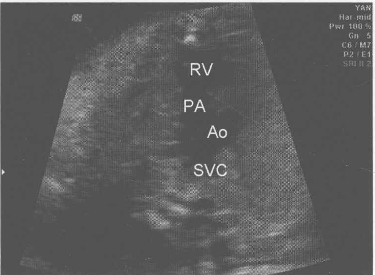
图13-28 右心室流出道与三血管平面图
【扫查方法】在四腔心基础上将探头向胎儿左前方或左肩方向旋转，获得三血管切面。
【断面结构】 显示肺动脉主干（右心室流出道）、主动脉弓、上腔静脉（图中AO下方的小无回声区）。肺动脉主干及主动脉弓正常时大约呈 30°夹角，且主动脉略细于肺动脉。
【测量方法及正常值】 心室舒张期（肺动脉瓣关闭时）测量肺动脉内径。肺动脉正常值随孕周增长而变化（表 13-8）。
【临床价值】 观察主、肺动脉在三血管切面的走向、夹角及粗细比例，有助于诊断复杂心脏畸形。
（5）胎儿心脏，右心室流出道与三血管平面彩超图（图 13-29）
图13-29 胎儿心脏，右心室流出道与三血管平面彩超（见彩图42）
【扫查方法】 在四腔心基础上将探头向胎儿左前方或左肩方向旋转，获得三血管切面，加以彩色多普勒超声成像。
【断面结构】 显示肺动脉主干（右心室流出道）、主动脉弓、上腔静脉（图中AO下方的小无回声区）。肺动脉主干及主动脉弓正常时大约呈 30°夹角，且主动脉略细于肺动脉。肺动脉主干及主动脉弓的血流均流向降主动脉，故颜色与方向一致（图中因背离探头呈蓝色）。
【临床价值】 观察肺动脉主干及主动脉弓的血流形态，本平面有助于诊断复杂心脏畸形。
（6）胎儿心脏，心底短轴切面（图13-30）
图13-30 胎儿心脏，心底短轴切面
【扫查方法】在五腔心的基础上将探头向胎儿头侧稍移动或改变角度即可。
【断面结构】 显示肺动脉起源于右心室；升主动脉位于中央，周围一圈结构依次为：肺动脉主干、右心室、右心房、左心房。在该平面上通过摆动探头可以观察到肺主动脉、左右分支和动脉导管。
【临床价值】 协助诊断复杂心脏畸形。
（7）胎儿心脏，心底短轴切面及测量（图13-31）
图13-31 胎儿心脏，心底短轴切面及测量
【扫查方法】在五腔心的基础上将探头向胎儿头侧稍移动或改变角度即可。
【断面结构】肺动脉、主动脉及左房，为使测量尽可能地精确可靠，应尽量使主、肺动脉的管壁垂直于声速。
【测量方法及正常值】可同时测量主动脉与肺动脉的内径。主、肺动脉正常值随孕周增长而变化，主、肺动脉比值在孕周中变化较小（表13-8）。
【临床价值】协助诊断复杂心脏畸形。
6. 胎儿胸部横切面（图 13-32）
图13-32 胎儿胸部横切面
【扫查方法】 横切面同四腔心切面。
【断面结构】 显示胎肺及心脏横断面，呈近三角形的中高回声结构，位于心脏两侧。
【临床价值】了解胎肺发育情况，诊断肺囊性腺瘤样病变、隔离肺、膈疝等胎儿畸形。
7. 腹部切面
（1） 胎儿纵切面（图13-33）
图13-33 胎儿纵切面
【扫查方法】通过移动探头获取通过胎儿躯干部与胎儿长轴一致的冠状切面。
【断面结构】主要显示肝脏、胃泡、肠管、膀胱等腹腔脏器。胃泡随胎儿吞咽活动可有充盈或空虚的变化。膀胱也因排尿前或后有大小的变化。
【临床价值】了解腹部脏器位置及发育情况。
（2）腹部横切面（腹围平面）（图13-34）
图13-34 腹部横切面（腹围平面）
【扫查方法】 探头在孕妇腹部沿胎儿纵轴方向由头侧向足侧移动，显示胎儿腹部脏器，然后旋转探头 90°做垂直于脊柱的胎儿腹部横切面扫查，显示胃泡和脐静脉。
【断面结构】除显示腹壁和椎体横断面“品”字形结构，此平面还应显示胃泡、脐静脉、肾上腺。其中，脐静脉应显示在肝内右拐的一段，不应显示肾和胸腔脏器。
【测量方法及正常值】在腹围平面沿腹壁外缘测量其周径即腹围。腹围正常值随孕周增长而变化（表13-9）。
【临床价值】腹围反映了胎儿生长发育情况，是常用胎儿超声指标，是估计胎儿体重及诊断胎儿宫内生长受限的常用指标之一。也是诊断消化道梗阻（双泡征）的平面之一。
表 13-9 胎儿腹围正常值
| 孕周 | 腹围(mm) | ||||
| 3th% | 10th% | 50th% | 90th% | 97th% | |
| 10 | 29.1 | 30.9 | 34.8 | 38.7 | 40.5 |
| 11 | 38.7 | 40.8 | 45.3 | 49.9 | 52.0 |
| 12 | 48.7 | 51.1 | 56.2 | 61.4 | 63.8 |
| 13 | 59.0 | 61.7 | 67.4 | 73.2 | 75.9 |
| 14 | 69.4 | 72.4 | 78.8 | 85.2 | 88.2 |
| 15 | 80.1 | 83.4 | 90.4 | 97.4 | 100.6 |
| 16 | 90.9 | 94.4 | 102.1 | 109.7 | 113.2 |
| 17 | 101.8 | 105.6 | 113.8 | 122.1 | 125.9 |
| 18 | 112.7 | 116.8 | 125.7 | 134.5 | 138.7 |
| 19 | 123.6 | 128.0 | 137.5 | 147.0 | 151.4 |
| 20 | 134.5 | 139.2 | 149.3 | 159.4 | 164.2 |
| 21 | 145.4 | 150.4 | 161.1 | 171.8 | 176.8 |
| 22 | 156.1 | 161.4 | 172.8 | 184.1 | 189.4 |
| 23 | 166.8 | 172.4 | 184.3 | 196.3 | 201.9 |
| 24 | 177.3 | 183.2 | 195.7 | 208.3 | 214.2 |
| 25 | 187.6 | 193.8 | 207.0 | 220.2 | 226.4 |
| 26 | 197.7 | 204.2 | 218.0 | 231.8 | 238.3 |
| 27 | 207.6 | 214.4 | 228.8 | 243.3 | 250.0 |
（续表）
| 孕周 | 腹围（mm） | ||||
| 3th% | 10th% | 50th% | 90th% | 97th% | |
| 28 | 217.3 | 224.3 | 239.4 | 254.4 | 261.5 |
| 29 | 226.6 | 234.0 | 249.7 | 265.3 | 272.7 |
| 30 | 235.7 | 243.4 | 259.7 | 276.0 | 283.6 |
| 31 | 244.5 | 252.4 | 269.3 | 286.2 | 294.2 |
| 32 | 252.9 | 261.1 | 278.6 | 296.2 | 304.4 |
| 33 | 260.9 | 269.5 | 287.6 | 305.8 | 314.3 |
| 34 | 268.6 | 277.4 | 296.2 | 315.0 | 323.8 |
| 35 | 275.9 | 285.0 | 304.4 | 323.8 | 332.9 |
| 36 | 282.8 | 292.1 | 312.2 | 332.2 | 341.6 |
| 37 | 289.2 | 298.9 | 319.5 | 340.1 | 349.8 |
| 38 | 295.1 | 305.1 | 326.4 | 347.6 | 357.6 |
| 39 | 300.6 | 310.9 | 332.8 | 354.6 | 364.9 |
| 40 | 305.6 | 316.2 | 338.7 | 361.2 | 371.7 |
（3） 脐带入口处腹部横切面（图13-35）
图13-35 脐带入口处腹部横切面
注：UC.脐带；BO.肠管；SP.脊椎
【扫查方法】 移动探头至下腹部，获取经过脐根部的下腹部横切面。
【断面结构】 显示脐血管插入腹壁处，脐孔处仅有脐血管的出入而没有其他内脏突出。
【临床价值】通过此平面了解腹壁完整性，协助诊断脐膨出、脐疝、腹壁缺损内脏外翻等畸形。同时观察肠管的形态与回声。
（4）胎儿下腹部横切面（腹壁、脐根部、膀胱、脐血管）（图13-36）
图13-36 胎儿下腹部横切面（见彩图43）
【扫查方法】 移动探头至下腹部，获取经过脐根部及膀胱的下腹部横切面。
【断面结构】脐孔处仅有脐血管的出入而没有其他内脏突出。彩色能量图显示膀胱两侧各见一血管（脐动脉）由其背后绕至前方腹壁脐孔处。
【临床价值】通过此平面了解腹壁完整性，并了解脐动脉的数目及膀胱的充盈度。
8. 胎儿肾脏
（1）胎儿肾纵切面（图13-37）
图13-37 胎儿肾纵切面
【扫查方法】在胎儿脊柱矢状切面基础上将探头分别向脊柱的两侧移动，获取肾纵切面。
【断面结构】肾呈长椭圆形，位于脊柱一侧，双肾上方可见肾土腺，左肾上腺前上方见胃泡。
【测量方法及正常值】 测量肾的最大上下径即长径（D1，D2），与之垂直测量其最大前后径。肾的长径与前后径正常值随孕周而变化（表13-10）。
【临床价值】了解肾的发育情况，诊断肾畸形、泌尿道梗阻等异常。
表 13-10 胎儿肾正常值（X ± SD）
| 孕龄（周） | N | 长径（cm） | 横径（cm） | 前后径（cm） | |||
| 左 | 右 | 左 | 右 | 左 | 右 | ||
| 28～ | 24 | 3.1 ± 0.096 | 2.9 ± 0.097 | 2.1 ± 0.095 | 2.2 ± 0.060 | 1.9 ± 0.056 | 1.9 ± 0.060 |
| 29～ | 25 | 3.0 ± 0.120 | 3.0 ± 0.211 | 2.2 ± 0.098 | 2.3 ± 0.043 | 1.9 ± 0.009 | 1.9 ± 0.036 |
| 30～ | 28 | 3.3 ± 0.138 | 3.1 ± 0.169 | 2.2 ± 0.082 | 2.3 ± 0.078 | 2.0 ± 0.106 | 1.9 ± 0.065 |
| 31～ | 22 | 3.4 ± 0.170 | 3.3 ± 0.137 | 2.3 ± 0.134 | 2.3 ± 0.150 | 1.9 ± 0.101 | 2.0 ± 0.123 |
| 32～ | 42 | 3.4 ± 0.192 | 3.4 ± 0.161 | 2.3 ± 0.141 | 2.4 ± 0.124 | 2.1 ± 0.119 | 2.2 ± 0.080 |
| 33～ | 33 | 3.5 ± 0.264 | 3.4 ± 0.173 | 2.4 ± 0.171 | 2.5 ± 0.128 | 2.2 ± 0.108 | 2.2 ± 0.105 |
| 34～ | 52 | 3.6 ± 0.179 | 3.5 ± 0.185 | 2.5 ± 0.176 | 2.5 ± 0.165 | 2.2 ± 0.127 | 2.2 ± 0.098 |
| 35～ | 30 | 3.8 ± 0.280 | 3.7 ± 0.241 | 2.6 ± 0.168 | 2.6 ± 0.137 | 2.2 ± 0.123 | 2.2 ± 0.091 |
| 36～ | 33 | 3.9 ± 0.283 | 3.7 ± 0.227 | 2.6 ± 0.147 | 2.7 ± 0.179 | 2.5 ± 0.156 | 2.4 ± 0.143 |
| 37～ | 48 | 3.9 ± 0.240 | 3.8 ± 0.240 | 2.7 ± 0.176 | 2.7 ± 0.160 | 2.5 ± 0.153 | 2.5 ± 0.125 |
| 38～ | 54 | 4.0 ± 0.205 | 4.0 ± 0.208 | 2.7 ± 0.126 | 2.8 ± 0.162 | 2.5 ± 0.140 | 2.5 ± 0.164 |
| 39～ | 82 | 4.1 ± 0.142 | 4.0 ± 0.165 | 2.7 ± 0.174 | 2.8 ± 0.174 | 2.5 ± 0.114 | 2.5 ± 0.160 |
| 40～ | 50 | 4.2 ± 0.142 | 4.1 ± 0.183 | 2.8 ± 0.140 | 2.9 ± 0.154 | 2.5 ± 0.088 | 2.5 ± 0.138 |
| 41～ | 14 | 4.3 ± 0.199 | 4.2 ± 0.200 | 2.8 ± 0.153 | 2.8 ± 0.133 | 2.5 ± 0.095 | 2.5 ± 0.109 |
（2）胎儿肾横切面（图13-38）
图13-38 胎儿肾横切面
【扫查方法】在纵切基础上旋转探头 90°，获取肾横切面。
【断面结构】横切时肾呈椭圆形，位于脊柱两侧。
【测量方法及正常值】测量肾的最大横径、肾横径及肾盂宽度（前后径）。肾的横径正常值随孕周而变化（表13-10）。肾盂正常值：孕28周以前应小于5mm，孕28周以后应小于7mm。
【临床价值】了解肾的发育情况，诊断肾畸形、泌尿道梗阻等异常。
（3）胎儿肾冠状切面（图 13-39）
图13-39 胎儿肾冠状切面（见彩图44）
【断面结构】显示双肾呈长椭圆形位于脊柱两侧，双侧肾动脉（RRA，LRA）由降主动脉发出。
【扫查方法】在纵切或横切基础上再次旋转探头获取下腹部冠状切面。
【临床价值】了解肾的发育及血供情况，诊断肾畸形等异常。
9. 脊柱
（1）脊柱纵切图（图13-40）
图13-40 脊柱纵切图
【扫查方法】与胎儿纵轴一致移动探头，获取脊柱的旁正中矢状切面（纵切面），观察脊椎骨（包括椎体、椎弓）的排列情况，同时需注意背部表面覆盖的皮肤延续性是否完整。
【断面结构】可见椎体与一侧的椎弓规则排列成两条串珠状的强回声光带，中央长条状弱回声区为椎管，表面皮肤完整呈线状回声。
【临床价值】协助诊断脊柱裂、脊膜膨出及其他脊柱畸形。
（2）脊柱横切图（图13-41）
图13-41 脊柱横切图
注：1. 椎弓；2. 椎体；3. 椎管
【扫查方法】与胎儿纵轴垂直，自胎儿颈部至臀部（或相反方向）移动探头，逐个显示脊柱各椎骨的横切面，同时注意其表面覆盖的背部皮肤是否完整。
【断面结构】 各椎骨的椎体和双侧椎弓共3个骨化中心呈“品”字形结构，中央为椎管，表面皮肤完整。
【临床价值】协助诊断脊柱裂、脊膜膨出及其他脊柱畸形。
（3） 脊柱冠状切图（图13-42）
图13-42 脊柱冠状切面图
【扫查方法】与胎儿长轴切面及横切面均垂直，移动探头，获取脊柱的冠状切面，显示脊椎骨（包括椎体、椎弓）在冠状切面的排列情况，注意双侧椎弓的对称性。
【断面结构】显示胸腰段脊椎双侧的椎弓呈左右平行排列的两条串珠状的强回声光带，中央为弱回声的椎管。同时显示胸部的肋骨回声。
【临床价值】协助诊断脊柱裂、脊膜膨出及其他脊柱畸形。
10. 股骨、肱骨及其他四肢长骨
（1）股骨及肱骨长轴切面（长径测量）（图13-43）
图13-43 股骨及肱骨长轴切面（长径测量）
【扫查方法】 ①股骨（图13-43的图左）：首先显示胎儿纵轴和脊柱，在骶尾部处以尾椎为支点旋转探头显示一侧髋骨，再以髋骨为支点旋转探头显示股骨；②肱骨（图13-43的图右）：首先显示胎儿纵轴和脊柱，在胸部脊椎处旋转探头显示一侧肩胛骨，再以肩胛骨为支点旋转探头显示肱骨；③对侧的股骨和肱骨显示同上法。
【断面结构】股骨与肱骨的声像图近似，纵切面（即长轴切面）时显示其全貌以及周围的软组织及皮肤，中央的股骨或肱骨显示为强回声的长条状或棒状结构，周围的软组织呈弱回声；横断面（横切面）时显示中央强回声的光斑（长骨横断面）和周围弱回声的软组织。
【测量方法及正常值】 测量长骨时要求测量骨干的全长，但不包括两侧的骨骺。测量键置于骨干一侧断面的中点。表13-11所示为胎儿股骨正常参考值范围。【临床价值】 胎儿长骨长度是反映胎儿生长发育的重要指标，也是遗传学超声的重要指标之一。
表 13-11 胎儿股骨正常值
| 孕周(周数) | 3th% | 10th% | 50th% | 90th% | 97th% |
| 12 | 3.2 | 4.1 | 5.9 | 7.8 | 8.6 |
| 13 | 6.5 | 7.4 | 9.3 | 11.2 | 12.1 |
| 14 | 9.8 | 10.7 | 12.7 | 14.7 | 15.6 |
| 15 | 13.0 | 14.0 | 16.0 | 18.0 | 19.0 |
| 16 | 16.2 | 17.2 | 19.3 | 21.3 | 22.3 |
| 17 | 19.3 | 20.3 | 22.4 | 24.6 | 25.6 |
| 18 | 22.4 | 23.4 | 25.6 | 27.8 | 28.8 |
| 19 | 25.3 | 26.4 | 28.6 | 30.9 | 31.9 |
| 20 | 28.2 | 29.3 | 31.6 | 33.9 | 35.0 |
| 21 | 31.0 | 32.2 | 34.5 | 36.9 | 38.0 |
| 22 | 33.8 | 34.9 | 37.4 | 39.8 | 40.9 |
| 23 | 36.5 | 37.6 | 40.1 | 42.6 | 43.8 |
| 24 | 39.0 | 40.2 | 42.8 | 45.3 | 46.5 |
| 25 | 41.5 | 42.7 | 45.3 | 48.0 | 49.2 |
| 26 | 43.9 | 45.1 | 47.8 | 50.5 | 51.7 |
| 27 | 46.2 | 47.5 | 50.2 | 52.9 | 54.2 |
Atlas of human body ultrasound scanning
股骨长（mm）
| 3^{th}% | 10^{th}% | 50^{th}% | 90^{th}% | 97^{th}% |
| 28 | 48.4 | 49.7 | 52.5 | 55.3 |
| 29 | 50.5 | 51.8 | 54.6 | 57.5 |
| 30 | 52.4 | 53.8 | 56.7 | 59.6 |
| 31 | 54.3 | 55.7 | 58.6 | 61.6 |
| 32 | 56.0 | 57.4 | 60.5 | 63.5 |
| 33 | 57.6 | 59.1 | 62.2 | 65.3 |
| 34 | 59.1 | 60.6 | 63.7 | 66.9 |
| 35 | 60.5 | 62.0 | 65.2 | 68.4 |
| 36 | 61.7 | 63.2 | 66.5 | 69.8 |
| 37 | 62.8 | 64.4 | 67.7 | 71.0 |
| 38 | 63.8 | 65.4 | 68.7 | 72.1 |
| 39 | 64.6 | 66.2 | 69.6 | 73.1 |
| 40 | 65.2 | 66.9 | 70.4 | 73.9 |
（2）双侧上肢尺桡骨冠状切面（图13-44）
图13-44 双侧上肢尺桡骨冠状切面
【扫查方法】 ①显示肱骨后，根据肘关节的方向旋转探头，寻找前臂并显示前臂的冠状切面；②下肢胫腓骨的显示方法同上；③关键是在移动或旋转探头时要逐步进行，根据肘、膝等关节的方向顺序查找。
【断面结构】 前臂的尺桡骨显示为强回声的长条状或棒状结构，2条长骨的排列接近平行。前臂的横断面以及小腿胫腓骨的横断面均有2个类圆形强回声。周围为软组织及皮肤。
【临床价值】了解尺桡骨的生长发育情况。
（3） 双侧足底冠状切面（图13-45）
图13-45 双侧足底冠状切面
【扫查方法】找到下肢胫腓骨长轴切面后，以踝关节为支点旋转和移动探头，可得到足底的冠状切面。
【断面结构】足部的长骨均呈短棒状。手部的长骨也均呈短棒状。受胎位及手足的姿势影响不易观察，目前胎儿手足的检查未列入超声检查常规。
【临床价值】反映胎儿生长发育的指标之一，协助诊断多趾、足内翻等畸形。
（三） 胎盘
胎盘由羊膜、胎盘实质、绒毛膜板构成，其内部回声随孕周而改变。
1. 胎盘分级
(1) I 级胎盘纵切及冠状切面 (图 13-46)
图13-46 Ⅰ级胎盘纵切及冠状切面
【测量方法】 胎盘厚度测量：测量由绒毛膜板至基底膜的距离，测量线与基底膜垂直。
【扫查方法】 探头纵切或横切，于孕妇整个腹部扫查寻找胎盘附着部位。垂直于胎盘附着面做胎盘纵切，再与之垂直剖视胎盘、观察胎盘内部回声。
【断面结构】胎盘绒毛膜面与羊膜面光滑、无强回声光点，胎盘实质内部光点均匀细密。
【临床价值】 测量胎盘厚度及对胎盘内部回声的观察，有助于判断胎儿成熟度、排除胎盘异常肿块及鉴别某些胎儿异常。
(2) Ⅱ级胎盘纵切及冠状切面 (图 13-47)
图13-47 Ⅱ级胎盘纵切及冠状切面
【扫查方法】 探头纵切或横切，于孕妇整个腹部扫查寻找胎盘附着部位。再与之垂直剖视胎盘，观察图片内部回声。
【断面结构】胎盘绒毛膜面与胎盘分界清晰，胎盘内部回声尚均匀但略粗大，可见散在点状强回声，依稀可辨胎盘小叶。
【临床价值】了解胎盘形态，判断胎儿成熟度，诊断胎盘肿块，鉴别某些胎儿异常。
（3）Ⅲ级胎盘纵切及冠状切面（图13-48）
图13-48 Ⅲ级胎盘纵切及冠状切面
【断面结构】胎盘绒毛膜面起伏不平，胎盘内回声极不均匀，小叶成强回声环，中央静脉管清晰。
【扫查方法】 探头纵切或横切，于孕妇整个腹部扫查寻找胎盘附着部位。再与之垂直剖视胎盘，观察图片内部回声。
【临床价值】了解胎盘形态，显著判断胎儿成熟度，诊断胎盘肿块及鉴别某些胎儿异常。
2. 前置胎盘
（1）后壁低置胎盘（图13-49）
图13-49 后壁低置胎盘
注：胎盘下缘距宫颈内口21mm
【扫查方法】首先在显示胎盘后，要找到胎盘的附着部位及其下缘；其次将探头纵切母体宫颈，显示宫颈纵切面，确定宫颈内口位置；再次观察胎盘下缘位置与宫颈内口之间的关系、测量其间距。
【断面结构】显示充盈的膀胱，膀胱后方的子宫下段、宫颈，胎盘（图中位于后壁）及胎盘下缘。
【测量方法】 测量胎盘下缘至宫颈内口之间的距离。
【临床价值】 胎盘下缘距宫颈内口的距离小于70mm时，如为孕28周以前需定期复查，因随着子宫下段的形成，胎盘下缘可能向上移；孕28周以后可诊
断低置胎盘。若胎盘下缘到达宫颈内口边缘而未超出宫颈内口为边缘性前置胎盘。若到达宫颈内口一侧且超出宫颈内口但未达宫颈口对侧为部分性前置胎盘，此型超声诊断较困难，有时与边缘性前置胎盘不易鉴别。
(2) 完全性（中央性）前置胎盘（图 13-50）
图13-50 完全性（中央性）前置胎盘
【扫查方法】找到胎盘及其下缘，再将探头纵切母体宫颈纵轴，确定宫颈内口位置，并观察胎盘下缘位置与宫颈内口之间的关系。
【断面结构】 显示充盈的膀胱，膀胱后方的子宫下段、宫颈，胎盘（图中位于后壁）及胎盘下缘。胎盘下缘完全覆盖宫颈内口。
【临床价值】胎盘下缘超出宫颈内口一侧且已达宫颈口对侧为完全性（中央性）前置胎盘（图13-50）。
（四） 羊水
早期呈无回声，晚期妊娠时因胎儿皮肤细胞和胎脂的脱落而内部回声增多。
1. 羊水平段 最大羊水池深度（图 13-51）
图13-51 羊水平段（最大羊水池深度）
【扫查方法】在孕妇腹部大范围扫查寻找羊水无回声区，观察其分布及内部回声。
【断面结构】宫腔内呈不规则无回声区，分布于胎儿周围。
【测量方法及正常值】最大羊水池深度：寻找一个最大最深的羊水池切面，且宽度与深度最接近，垂直于水平面测量其最大深度。正常为30～80mm。小于30mm为羊水过少，大于80mm为羊水过多。
【临床价值】与胎儿消化系统、泌尿系统等胎儿畸形或发育异常有关。
2. 羊水指数 羊水指数测量（图 13-52）。
图13-52 羊水指数测量方法显示
注：Q1.第1象限羊水深度；Q2.第2象限羊水深度；Q3.第3象限羊水深度；Q4.第4象限羊水深度
【扫查方法】以孕妇脐部为中点，划分四个象限，分别在每个象限寻找一个最大最深的羊水池切面并测量其最大羊水池深度（羊水深度单位 mm）。
【断面结构】 羊水池呈不规则无回声区。
【测量方法及正常值】将四个象限的羊水深度相加即得羊水指数。正常80～200mm。小于50mm为羊水过少，50～80mm为羊水偏少，200～250mm为羊水偏多，大于250mm为羊水过多。
【临床价值】与胎儿消化系统、泌尿系统等胎儿畸形或发育异常有关。
（五） 多普勒测量
1. 脐动脉多普勒测量
（1）脐带长轴切面（图13-53）
图13-53 脐带长轴切面
【扫查方法】可以在羊水中寻找，也可以在胎盘端或胎儿脐部一侧寻找脐带，与脐带的长轴平行显示其纵切面。
【断面结构】脐带呈绳索样，内部血管呈螺旋形，为2根较细的脐动脉（UA）和1根较粗的脐静脉（UV）。
【临床价值】了解脐带发育情况，诊断单脐动脉、脐带囊肿等异常。
（2）脐带长轴切面彩色血流图（图 13-54）
图13-54 脐带长轴切面彩色血流图（见彩图45）
【扫查方法】 显示脐带长轴切面后，加上彩色多普勒超声显像。
【断面结构】脐带呈绳索样，内部血管呈螺旋形，为2根较细的脐动脉（UA）和1根较粗的脐静脉（UV）。彩色多普勒超声显示2根脐动脉的血流方向一致，但均与脐静脉的血流方向相反。
【临床价值】了解脐带发育情况，诊断单脐动脉、脐带囊肿等异常。
（3）脐带短轴切面（图13-55）
图13-55 脐带短轴切面
【扫查方法】 显示脐带长轴切面后，旋转和移动探头显示其横切面。
【断面结构】显示2根脐动脉的横断面与1根脐静脉的横断面，三者组成两小一大的品字形结构。
【临床价值】了解脐带发育情况，诊断单脐动脉、脐带囊肿等异常。
（4）脐动脉多普勒检测（图13-56）
图13-56 脐动脉多普勒检测
注：图中向上的正向频谱为脐动脉多普勒波形，反向血流为脐静脉多普勒波形
【扫查方法】找到脐带后，显示其纵切面或横切面。
【测量方法及正常值】将多普勒取样门置于脐动脉处，检测脐动脉多普勒波形。取样门可适当放宽，以同时显示脐动脉与脐静脉的频谱。移动探头使脐动脉的走向与超声声束之间的夹角不超过 45°，如以检测脐动脉的搏动指数和阻力指数为目的，对声束-血管夹角校正的要求不高。脐动脉搏动指数、阻力指数及收缩期峰值流速与舒张末期流速之比（S/D）随孕周增长而降低（表13-12）。
【断面结构】彩色多普勒超声显示两根动脉的血流与脐静脉的血流方向相反。脐动脉多普勒波形呈单峰形，早孕期及中孕早期可见舒张期血流缺失。
【临床价值】了解胎儿脐动脉远端阻力。胎儿宫内缺氧时，脐动脉阻力增高。胎儿严重缺氧时，脐动脉舒张期血流缺失或反流。胎儿宫内生长严重受限时，脐动脉阻力增高。
表 13-12 脐动脉搏动指数、阻力指数、S/D 正常值
| 孕周 | 例数 | 搏动指数（PI） | 阻力指数（RI） | 收缩期舒张期峰值流速比值（S/D） | ||||||
| 5th% | 50th% | 95th% | 5th% | 50th% | 95th% | 5th% | 50th% | 95th% | ||
| 20 | 61 | 1.13 | 1.69 | 1.64 | 0.68 | 0.80 | 0.85 | 3.16 | 4.91 | 6.63 |
| 21 | 102 | 1.06 | 1.29 | 1.50 | 0.69 | 0.77 | 0.84 | 3.15 | 4.30 | 5.89 |
| 22 | 214 | 1.00 | 1.27 | 1.52 | 0.67 | 0.76 | 0.83 | 3.00 | 4.14 | 6.11 |
| 23 | 116 | 0.98 | 1.21 | 1.53 | 0.66 | 0.74 | 0.84 | 2.90 | 3.90 | 6.17 |
| 24 | 80 | 0.98 | 1.22 | 1.60 | 0.64 | 0.73 | 0.81 | 2.71 | 3.73 | 5.37 |
| 25 | 81 | 0.83 | 1.10 | 1.40 | 0.59 | 0.69 | 0.79 | 2.45 | 3.19 | 4.84 |
| 26 | 90 | 0.81 | 1.10 | 1.44 | 0.57 | 0.69 | 0.81 | 2.33 | 3.20 | 4.74 |
| 27 | 83 | 0.83 | 1.06 | 1.41 | 0.58 | 0.68 | 0.78 | 2.40 | 3.08 | 4.17 |
| 28 | 106 | 0.78 | 1.01 | 1.23 | 0.55 | 0.66 | 0.74 | 2.19 | 2.90 | 3.93 |
| 29 | 129 | 0.76 | 0.98 | 1.26 | 0.55 | 0.65 | 0.75 | 2.26 | 2.86 | 3.83 |
| 30 | 101 | 0.77 | 0.98 | 1.23 | 0.56 | 0.64 | 0.72 | 2.22 | 2.79 | 3.63 |
| 31 | 100 | 0.72 | 0.92 | 1.19 | 0.52 | 0.63 | 0.73 | 2.12 | 2.68 | 3.70 |
| 32 | 107 | 0.70 | 0.95 | 1.25 | 0.51 | 0.63 | 0.72 | 1.97 | 2.65 | 3.60 |
| 33 | 101 | 0.70 | 0.91 | 1.20 | 0.51 | 0.62 | 0.71 | 2.02 | 2.58 | 3.46 |
| 34 | 105 | 0.67 | 0.85 | 1.15 | 0.49 | 0.59 | 0.71 | 1.96 | 2.42 | 3.39 |
| 35 | 118 | 0.61 | 0.84 | 1.11 | 0.45 | 0.59 | 0.68 | 1.86 | 2.42 | 3.14 |
（续表）
| 孕周 | 例数 | 搏动指数（PI） | 阻力指数（RI） | 收缩期舒张期峰值流速比值（S/D） | ||||||
| 5th% | 50th% | 95th% | 5th% | 50th% | 95th% | 5th% | 50th% | 95th% | ||
| 36 | 103 | 0.63 | 0.83 | 1.12 | 0.47 | 0.58 | 0.69 | 1.89 | 2.40 | 3.12 |
| 37 | 104 | 0.64 | 0.81 | 1.09 | 0.45 | 0.58 | 0.69 | 1.96 | 2.33 | 3.12 |
| 38 | 101 | 0.56 | 0.81 | 1.13 | 0.43 | 0.57 | 0.68 | 1.77 | 2.33 | 3.14 |
| 39 | 105 | 0.56 | 0.82 | 1.05 | 0.43 | 0.57 | 0.68 | 1.78 | 2.34 | 3.07 |
| 40 | 111 | 0.57 | 0.80 | 1.05 | 0.44 | 0.56 | 0.65 | 1.78 | 2.28 | 2.88 |
2. 大脑中动脉多普勒测量（图 13-57）
图13-57 大脑中动脉多普勒测量
【扫查方法】于头围平面下移探头，显示大脑颅底结构，再开启彩色血流显示颅底动脉环。
【断面结构】大脑中动脉在颅底动脉环的一侧斜向外向前行走。其多普勒波形呈单峰形。
【测量方法及正常值】将多普勒取样门置于一侧大脑中动脉近颅底动脉环处，注意血管走行并校正取样线角度＜ 60°（最佳＜ 45°）。大脑中动脉的搏动指数、阻力指数及收缩期/舒张期峰值流速比值随孕周增长而逐渐降低，但收缩期峰值流速随妊娠而逐渐增高（表13-13）。
【临床价值】 ①可用于判断胎儿宫内缺氧。胎儿宫内缺氧时，大脑中动脉阻力降低。但胎儿宫内缺氧失代偿时，大脑中动脉阻力增高。②有助于监测胎儿生长发育情况。胎儿宫内生长严重受限时，脐动脉血流阻力增高，大脑中动脉峰值流速升高并与低氧血症及高二氧化碳血症相关。③预测胎儿贫血。当大脑中动脉峰值流速增高且大于1.35～1.5MoM时，MCA-PSV预测胎儿贫血的敏感性达84%～100%，但存在10%～12%的假阳性率。
表 13-13 大脑中动脉峰值流速正常值
| 孕周 | 大脑中动脉峰值流速 (cm/s) 的中位数 (MoM) | |||
| 1.00 MoM | 1.29 MoM | 1.50 MoM | 1.55 MoM | |
| cm/s | ||||
| 18 | 23.2 | 29.9 | 34.8 | 36.0 |
| 20 | 25.5 | 32.8 | 38.2 | 39.5 |
| 22 | 27.9 | 36.0 | 41.9 | 43.3 |
| 24 | 30.7 | 39.5 | 46.0 | 47.5 |
| 26 | 33.6 | 43.3 | 50.4 | 52.1 |
| 28 | 36.9 | 47.6 | 55.4 | 57.2 |
| 30 | 40.5 | 52.2 | 60.7 | 62.8 |
| 32 | 44.4 | 57.3 | 66.6 | 68.9 |
| 34 | 48.7 | 62.9 | 73.1 | 75.6 |
| 36 | 53.5 | 69.0 | 80.2 | 82.9 |
| 38 | 58.7 | 75.7 | 88.0 | 91.0 |
| 40 | 64.4 | 83.0 | 96.6 | 99.8 |
3. 静脉导管多普勒检测
（1）胎儿纵切面静脉导管彩色血流图（图13-58）
图13-58 胎儿纵切面静脉导管彩色血流图（见彩图46）
【扫查方法】横切或纵切胎儿腹部均可，一般采用纵切。纵切胎儿腹部，开启彩色血流，在肝内脐静脉及下腔静脉之间寻找静脉导管。
【断面结构】脐静脉入肝后向上向后行走，在与下腔静脉交接处有一段细窄的管状结构即为静脉导管。因管径细而血流流速高，彩色血流色彩特别明亮。
【临床价值】在先天性心脏畸形和染色体异常的胎儿静脉导管内，出现静脉导管多普勒波形异常的表现。
（2） 静脉导管多普勒波形（图13-59）
图13-59 静脉导管多普勒波形（见彩图47）
注：DV.静脉导管
【扫查方法】找到静脉导管后，将多普勒取样门置于其上。
【断面结构】多普勒波形表现为三相波，S峰代表心室收缩期，D峰代表心室舒张早期，A波谷发生在心室舒张晚期（心房收缩期）。
【测量方法】将多普勒取样门置于静脉导管处，注意血管走行并校正取样线角度＜60°（最佳＜45°）。
【临床价值】 正常时 A 波与 S、D 波在基线的同一方向，均为回心血流。
（3） 静脉导管多普勒检测（图13-60）
图13-60 静脉导管多普勒检测（见彩图48）
【扫查方法】横切或纵切胎儿腹部均可，找到静脉导管后，将多普勒取样门置于其上。
【断面结构】多普勒波形表现为三相波，S峰代表心室收缩期，D峰代表心室舒张早期，A波谷发生在心室舒张晚期（心房收缩期）。
【测量方法】将多普勒取样门置于静脉导管处，注意血管走行并校正取样线角度＜60°（最佳＜45°）。
【临床价值】 正常时 A 波与 S、D 波在基线的同一方向，均为回心血流。在先天性心脏畸形和染色体异常的胎儿静脉导管内，出现 A 波缺失或反向。但 10～14 周正常胎儿的静脉导管血流频谱中存在着一定比例的 A 波生理性缺失或反向。
【正常值】孕16～41周，正常胎儿静脉导管血流速随着孕龄增加而增加，阻力指数随着孕龄增加而减低，S/D值在妊娠中保持不变。但各家报道正常值有差异，缺乏大样本量研究。
（周毓青 严英榴 张梅）